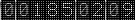

Department of Information Technology


Supporting Staff
Binoy Alex
Lab Assistant
Abhijeet Tandale
Lab Assistant
Shantanu Shukl
Lab Attendant
Notice (8): Undefined variable: circulars [APP\View\Layouts\site.ctp, line 351]Code Context<?phpforeach ($circulars as $circular) {$viewFile = 'C:\xampp\htdocs\app\View\Layouts\site.ctp' $dataForView = array( 'types' => array( '' => '', 'Under-graduate' => 'Under-graduate', 'Post-graduate' => 'Post-graduate', 'PhD' => 'PhD' ), 'dal' => array(), 'rsl' => array(), 'asl' => array(), 'scheds' => array(), 'department' => array( 'Department' => array( 'id' => '6', 'name' => 'Information Technology', 'description' => 'IT related studies', 'created_by' => '1', 'created_timestamp' => '2014-11-25 11:45:13', 'facultyList' => 'https://fcrit.ac.in/cdn/department/1569842333-Faculty.List.IT.pdf', 'Roadmap' => 'https://fcrit.ac.in/cdn/department/1569842333-ITRoadmap.pdf', 'infrastructure' => null ) ), 'dept' => 'information', 'type' => 'under-graduate', 'model' => 'Faculties', 'orderdata' => array( (int) 0 => array( 'Syllabus' => array( [maximum depth reached] ) ), (int) 1 => array( 'Syllabus' => array( [maximum depth reached] ) ), (int) 2 => array( 'Syllabus' => array( [maximum depth reached] ) ) ), 'resdata' => array( (int) 0 => array( 'Result' => array( [maximum depth reached] ) ), (int) 1 => array( 'Result' => array( [maximum depth reached] ) ), (int) 2 => array( 'Result' => array( [maximum depth reached] ) ) ), 'facdata' => array( (int) 0 => array( 'Faculty' => array( [maximum depth reached] ) ), (int) 1 => array( 'Faculty' => array( [maximum depth reached] ) ), (int) 2 => array( 'Faculty' => array( [maximum depth reached] ) ), (int) 3 => array( 'Faculty' => array( [maximum depth reached] ) ), (int) 4 => array( 'Faculty' => array( [maximum depth reached] ) ), (int) 5 => array( 'Faculty' => array( [maximum depth reached] ) ), (int) 6 => array( 'Faculty' => array( [maximum depth reached] ) ), (int) 7 => array( 'Faculty' => array( [maximum depth reached] ) ), (int) 8 => array( 'Faculty' => array( [maximum depth reached] ) ), (int) 9 => array( 'Faculty' => array( [maximum depth reached] ) ), (int) 10 => array( 'Faculty' => array( [maximum depth reached] ) ), (int) 11 => array( 'Faculty' => array( [maximum depth reached] ) ), (int) 12 => array( 'Faculty' => array( [maximum depth reached] ) ), (int) 13 => array( 'Faculty' => array( [maximum depth reached] ) ), (int) 14 => array( 'Faculty' => array( [maximum depth reached] ) ), (int) 15 => array( 'Faculty' => array( [maximum depth reached] ) ), (int) 16 => array( 'Faculty' => array( [maximum depth reached] ) ) ), 'infdata' => array( (int) 0 => array( 'Infrastructure' => array( [maximum depth reached] ) ), (int) 1 => array( 'Infrastructure' => array( [maximum depth reached] ) ), (int) 2 => array( 'Infrastructure' => array( [maximum depth reached] ) ), (int) 3 => array( 'Infrastructure' => array( [maximum depth reached] ) ), (int) 4 => array( 'Infrastructure' => array( [maximum depth reached] ) ), (int) 5 => array( 'Infrastructure' => array( [maximum depth reached] ) ), (int) 6 => array( 'Infrastructure' => array( [maximum depth reached] ) ), (int) 7 => array( 'Infrastructure' => array( [maximum depth reached] ) ), (int) 8 => array( 'Infrastructure' => array( [maximum depth reached] ) ), (int) 9 => array( 'Infrastructure' => array( [maximum depth reached] ) ) ), 'heads' => array( (int) 0 => array( 'Hod' => array( [maximum depth reached] ) ) ), 'mags' => array( (int) 0 => array( 'Magzine' => array( [maximum depth reached] ) ), (int) 1 => array( 'Magzine' => array( [maximum depth reached] ) ), (int) 2 => array( 'Magzine' => array( [maximum depth reached] ) ), (int) 3 => array( 'Magzine' => array( [maximum depth reached] ) ) ), 'visions' => array( 'DeptVision' => array( 'id' => '4', 'department_id' => '6', 'type' => 'Under-graduate', 'vision' => '<p style="text-align: justify;">To become a leading center of excellence for quality education, advance research and development in the field of Information Technology for self-sustaining professionals.</p>', 'mission' => '<ol> <li>To provide industry oriented quality education and training to students related to cutting edge technologies in the field of information technology.</li> <li>To promote multidisciplinary activities that inspires students to serve society through innovative applications.</li> <li>To promote entrepreneurship skills in students with overall personality development.</li> </ol>' ) ), 'obj' => array( 'DeptObjective' => array( 'id' => '3', 'department_id' => '6', 'type' => 'Under-graduate', 'objective' => '<p style="padding-left: 30px;">Graduate will be able to:</p> <ol> <li>Adapt technological changes in the field of information technology.</li> <li>Excel in higher education and professional career. </li> <li>Demonstrate multidisciplinary and entrepreneurship skills.</li> </ol> <p> </p>', 'outcome' => '<p>Graduate will be able to:</p> <ol> <li><span style="color: #000000;">A<span class="TextRun SCXW238179610 BCX0" lang="EN-US" xml:lang="EN-US" data-contrast="auto"><span class="NormalTextRun SCXW238179610 BCX0">dapt to the technological advancements in the field of Artificial Intelligence and Data Science. </span></span></span></li> <li><span class="TextRun SCXW203680128 BCX0" lang="EN-US" xml:lang="EN-US" data-contrast="auto"><span class="NormalTextRun SCXW203680128 BCX0">Develop research strategy in the domain of Internet of Things and Security. </span></span></li> </ol>' ) ), 'ttdata' => array( (int) 0 => array( 'TimeTable' => array( [maximum depth reached] ) ), (int) 1 => array( 'TimeTable' => array( [maximum depth reached] ) ), (int) 2 => array( 'TimeTable' => array( [maximum depth reached] ) ), (int) 3 => array( 'TimeTable' => array( [maximum depth reached] ) ), (int) 4 => array( 'TimeTable' => array( [maximum depth reached] ) ), (int) 5 => array( 'TimeTable' => array( [maximum depth reached] ) ) ), 'deptcom' => array( 'DeptCommittee' => array( 'id' => '2', 'type' => 'Under-graduate', 'department_id' => '6', 'year' => '2018-19', 'attachment' => 'https://fcrit.ac.in/cdn/deptcommittee/1684381840-itdeptcommittee2223.1.pdf', 'created_by' => '1', 'created_timestamp' => '2019-11-28 11:56:58' ) ), 'deptvid' => array( 'DeptVideo' => array( 'id' => '5', 'department_id' => '6', 'type' => 'Under-graduate', 'video_link' => '<p style="text-align: center;"> </p> <table class="tg" style="margin-left: auto; margin-right: auto; height: 144px; width: 642px;" frame="box" align="left"> <thead> <tr> <td colspan="3"><span style="font-size: x-large;"><strong>Department Videos</strong></span></td> </tr> <tr> <td colspan="3"><span> </span></td> </tr> </thead> <tbody> <tr> <td><span style="font-size: large;"><strong>Sr.No.</strong></span></td> <td><span style="font-size: large;"><strong>Title/ Description of Video</strong></span></td> <td><span style="font-size: large;"><strong>Video Link</strong></span></td> </tr> <tr> <td><span style="font-size: medium;">1.</span></td> <td> <p><span style="font-size: medium;">More about Information Technology Department</span></p> </td> <td><span style="font-size: medium;"><a title="Information Technology Department" href="https://www.youtube.com/watch?v=bJEuOZmPb_c&t=23s" target="_blank">https://www.youtube.com/watch?v=bJEuOZmPb_c&t=23s</a></span></td> </tr> </tbody> </table> <p style="text-align: center;"> </p> <p style="text-align: center;"> </p> <p style="text-align: center;"> </p> <p style="text-align: center;"> </p> <p style="text-align: center;"> </p> <p style="text-align: center;"><span style="font-size: large;"><strong> </strong></span></p> <p style="text-align: center;"> </p> <p style="text-align: center;"> </p>' ) ), 'ugp' => array( 'UndergraduateProject' => array( 'id' => '10', 'department_id' => '6', 'type' => 'Under-graduate', 'projects' => '<p style="text-align: center;"><a href="../../../cdn/department/IT_projects_2022-23.pdf" target="_blank"><span style="font-size: medium;">2022-23</span></a></p> <p style="text-align: center;"><a href="../../../cdn/department/IT_projects_2021-22.pdf" target="_blank"><span style="font-size: medium;">2021-22</span></a></p> <p style="text-align: center;"><a href="../../../cdn/department/IT_projects_2020-21.pdf" target="_blank"><span style="font-size: medium;">2020-21</span></a></p> <p style="text-align: center;"><a href="../../../cdn/department/IT_projects_2019-20.pdf" target="_blank"><span style="font-size: medium;">2019-20</span></a></p>' ) ), 'meprojects' => array(), 'mepublications' => array(), 'deptpubls' => array( (int) 0 => array( 'DeptPublication' => array( [maximum depth reached] ) ) ), 'mini_project' => array( 'MiniProject' => array( 'id' => '22', 'department_id' => '6', 'type' => 'Under-graduate', 'projects' => '<p style="text-align: center;"> </p> <table border="2" rules="all" cellspacing="1" cellpadding="1" align="center"> <tbody> <tr> <td> <h2><span style="font-size: x-large;">Mini Project Details</span></h2> </td> </tr> <tr> <td> <h4><span style="font-size: x-large;">Mini-Projects (TE)</span></h4> </td> </tr> <tr> <td> <pre><strong> <span style="font-size: large;"> <a href="../../../cdn/department/TE_22_23.pdf" target="_blank">2022-23</a></span></strong></pre> </td> </tr> <tr> <td> <h4><span style="font-size: x-large;">Mini-Projects (SE)</span></h4> </td> </tr> <tr> <td> <pre><span style="font-size: large;"><strong> <a href="../../../cdn/department/SE_22_23.pdf" target="_blank">2022-23</a></strong></span></pre> </td> </tr> </tbody> </table> <p style="text-align: center;"> </p> <p style="text-align: center;"> </p> <p> </p>' ) ), 'at' => array( (int) 0 => array( 'AluminiTestimonial' => array( [maximum depth reached] ) ), (int) 1 => array( 'AluminiTestimonial' => array( [maximum depth reached] ) ), (int) 2 => array( 'AluminiTestimonial' => array( [maximum depth reached] ) ) ), 'im' => array( 'InnovativeMethod' => array( 'id' => '7', 'department_id' => '6', 'type' => 'Under-graduate', 'methods' => '<h1><span style="color: #000000; font-size: medium; background-color: #ffffff;"><strong>Innovative Teaching Learning methods followed:</strong></span></h1> <p>1) Project based teaching - Every semester students do a mini-project for atleast one subject in a group of three. </p> <p>2) Seminars by students - Students are given a chance to give a seminars in subject like Business Communication and Ehics to enhance their skills.</p> <p>3) Application oriented problems - In subjects like Intelligent Systems and Automata theory students are given problems in which they can apply the concepts they have learnt to a scenario. </p> <p>4) Expert Lecture - Every semester subject teacher arranges one expert lecture by an industry person for their subjects.</p> <p>5) Video Lectures - For some subjects like Microcontroller and Embedded Programming, Storage Network Area Management and Retrieval and Big Data Analytics some video lectures are conducted to make students aware of how implementation is happening in actual world.</p>' ) ), 'programs' => array( 'Program' => array( 'id' => '6', 'department_id' => '6', 'ug' => '1', 'pg' => '0', 'phd' => '0' ) ), 'academiccal' => array( 'AcademicCalendar' => array( 'id' => '12', 'type' => 'Under-graduate', 'department_id' => '6', 'attachment' => 'https://fcrit.ac.in/cdn/academiccalendar/1683353408-AcadcalFH23.pdf', 'created_by' => '1', 'created_timestamp' => '2017-11-11 15:35:35' ) ), 'associations' => array( (int) 0 => array( 'Association' => array( [maximum depth reached] ) ), (int) 1 => array( 'Association' => array( [maximum depth reached] ) ), (int) 2 => array( 'Association' => array( [maximum depth reached] ) ), (int) 3 => array( 'Association' => array( [maximum depth reached] ) ), (int) 4 => array( 'Association' => array( [maximum depth reached] ) ) ), 'studentassociations' => array( (int) 0 => array( 'StudentAssociation' => array( [maximum depth reached] ) ), (int) 1 => array( 'StudentAssociation' => array( [maximum depth reached] ) ) ), 'ach' => array( (int) 0 => array( 'Achievement' => array( [maximum depth reached] ) ), (int) 1 => array( 'Achievement' => array( [maximum depth reached] ) ), (int) 2 => array( 'Achievement' => array( [maximum depth reached] ) ), (int) 3 => array( 'Achievement' => array( [maximum depth reached] ) ), (int) 4 => array( 'Achievement' => array( [maximum depth reached] ) ), (int) 5 => array( 'Achievement' => array( [maximum depth reached] ) ), (int) 6 => array( 'Achievement' => array( [maximum depth reached] ) ), (int) 7 => array( 'Achievement' => array( [maximum depth reached] ) ), (int) 8 => array( 'Achievement' => array( [maximum depth reached] ) ) ), 'activity' => array( (int) 0 => array( 'Activity' => array( [maximum depth reached] ) ), (int) 1 => array( 'Activity' => array( [maximum depth reached] ) ) ), 'content_for_layout' => ' <!-- refer department.ctp instead of this file --> <style> hr.style14 { border: 0; height: 1px; background-image: -webkit-linear-gradient(left, #f0f0f0, #8c8b8b, #f0f0f0); background-image: -moz-linear-gradient(left, #f0f0f0, #8c8b8b, #f0f0f0); background-image: -ms-linear-gradient(left, #f0f0f0, #8c8b8b, #f0f0f0); background-image: -o-linear-gradient(left, #f0f0f0, #8c8b8b, #f0f0f0); } th, td { text-align: center; } .tttable th, td { border: 2px solid #f9f9f9 !important; } div#time-table a:hover { color:#9BBA6E !important; } .typehighlight { background-color: #FFD137; } </style> <style> .displaypdf { height:600px; overflow: hidden; width: 110%; margin: auto; } #style-15::-webkit-scrollbar-track { -webkit-box-shadow: inset 0 0 6px rgba(0,0,0,0.1); background-color: #F5F5F5; border-radius: 10px; } #style-15::-webkit-scrollbar { width: 10px; background-color: #F5F5F5; } #style-15::-webkit-scrollbar-thumb { border-radius: 10px; background-color: #FFF; background-image: -webkit-gradient(linear, 40% 0%, 75% 84%, from(#FFD137), to(#FFD137), color-stop(.6,#f9dd86)) } </style> <style> .dropdown-menu { background-color: whitesmoke } .dropdown-menu li { color:black; padding: 10px; } .dropdown-menu li:hover { background-color: #FFD133; } .bd{ display:block; } </style> <body style="height:100%;"> <div class="banner" style="height:100%;"> <!-- page header section --> <div class="page-title"> <div class="container"> <div class="row" style="background-color: #0080d5;"> <div class="col-md-12 ptn-bg"> <h2>Information Technology </h2> <ol class="breadcrumb"> <li><a href="/dept_summary">Home</a></li> <li class="active">Information Technology</li> </ol> </div> </div> </div> </div> </div> <!-- banner section ending--> <div class="main-container" style="height:100%;"> <!-- Main-container start --> <div class="container" id="displayhere" style="display:block"; > <h1 style="margin-left: 50px;">Department of Information Technology</h1> <!-- Page Content start --> <div class="col-md-3"> <div class="tabbable" style="min-width:70px;"> <ul class="nav nav-pills nav-stacked" style="border-bottom: none; " > <!-- <li> <a href="/dept_summary">Go home</a> </li> --> <li class="dropdown-submenu"> <!-- <a>Programs offered</a> --> <ul class="dropdown-menu" style="min-width:150px !important;"> <a > <li class="typehighlight" > Under Graduate </li> </a> </ul> </li> </ul> <br> </div> <div class="col-md-12"> <div class="tabbable"> <ul class="nav nav-pills nav-stacked"> <li><a href="/academics/under-graduate/information/">About</a></li><li><a href="/academics/under-graduate/information/hod#hod">Head of Department</a></li><li><a href="/academics/under-graduate/information/dept-committees/#dept-committees">Committees</a></li><li><a href="/academics/under-graduate/information/faculty#faculty">Faculty & Supporting Staff</a></li><li><a href="/academics/under-graduate/information/infrastructure#infrastructure">Infrastructure</a></li><li><a href="/academics/under-graduate/information/activities#activity">Activities</a></li><li><a href="/academics/under-graduate/information/associations#association">Student Association</a></li><li><a href="/academics/under-graduate/information/magzines#magazine">Magazine</a></li><li><a href="/academics/under-graduate/information/dept-videos#dept-videos">Department Videos</a></li> </ul> <ul class="nav nav-pills nav-stacked" style="border: none;"> <li><a href="/academics/under-graduate/information/syllabu#syllabus">Syllabus</a></li><li><a href="/academics/under-graduate/information/results#result">Result Analysis</a></li><li><a href="/academics/under-graduate/information/time-table#time-table">Time Table</a></li><li><a href="/academics/under-graduate/information/achievements#achievement">Achievements</a></li><li><a href="/academics/under-graduate/information/academic-calendar#academic-calendars">Academic Calendar</a></li><li><a href="/academics/under-graduate/information/innovative-methods#innovative-methods">Innovative Teaching and Learning Methods</a></li><li><a href="/academics/under-graduate/information/alumini-testimonial#alumini-testimonials">Alumni Testimonials</a></li><li><a href="/academics/under-graduate/information/dept-publication#dept-publications">Publications</a></li> </ul> </div> </div><div class="col-md-12"> <div class="tabbable"> <ul class="nav nav-pills nav-stacked"> <li><a href="/academics/under-graduate/information/mini-projects#mini-projects">Projects</a></li> </ul> </div> </div> </div> <div class="col-md-9"> <div class="tab-pane row things" id="faculty" style="margin: -20px 0px 0px 25px; text-align: justify; padding: 10px;"> <br/> <div class="col-md-12" style="text-align: center;"> <div> <h2>Teaching Staff <a href="https://fcrit.ac.in/cdn/department/1569842333-Faculty.List.IT.pdf" style="margin-left:20px;" target="_blank" class="btn btn-default btn-yellow">Faculty List</a></h2> </div> <div class="col-md-4" style="height: 250px;text-align:center;margin-bottom:40px;"><div class="pic"><img src="https://fcrit.ac.in/cdn/faculty/1667817107-Dr.Shubhangi.Vaikole.photo.jpeg_160.jpg" class="img_responsive" style="height:130px;width:130px;" alt="" /><br/> <br/><b><a href="/faculty/228/dr-shubhangi-liladhar-vaikole">Dr Shubhangi Liladhar Vaikole</a></b><br/>Ph.D (Computer)<br/>Professor and HOD<br/>shubhangi.vaikole@fcrit.ac.in</div></div><div class="col-md-4" style="height: 250px;text-align:center;margin-bottom:40px;"><div class="pic"><img src="https://fcrit.ac.in/cdn/faculty/1522237417-Lakshmi.JPG_160.jpg" class="img_responsive" style="height:130px;width:130px;" alt="" /><br/> <br/><b><a href="/faculty/53/mrs-lakshmi-gadhikar">Mrs Lakshmi Gadhikar</a></b><br/>Ph.D pursuing<br/>Associate Professor<br/>lakshmi.gadhikar@fcrit.ac.in</div></div><div class="col-md-4" style="height: 250px;text-align:center;margin-bottom:40px;"><div class="pic"><img src="https://fcrit.ac.in/cdn/faculty/1644909951-vaishali.bodade.photo.jpg_160.jpg" class="img_responsive" style="height:130px;width:130px;" alt="" /><br/> <br/><b><a href="/faculty/212/dr-vaishali-vivekkumar-bodade">Dr. Vaishali Vivekkumar Bodade</a></b><br/>Ph. D. (I.T)<br/>Associate Professor<br/>vaishali.bodade@fcrit.ac.in</div></div><div class="col-md-4" style="height: 250px;text-align:center;margin-bottom:40px;"><div class="pic"><img src="https://fcrit.ac.in/cdn/faculty/1529301308-Archana.jpg_160.jpg" class="img_responsive" style="height:130px;width:130px;" alt="" /><br/> <br/><b><a href="/faculty/54/mrs-archana-shirke">Mrs Archana Shirke</a></b><br/>Ph.D pursuing<br/>Assistant Professor<br/>archana.shirke@fcrit.ac.in</div></div><div class="col-md-4" style="height: 250px;text-align:center;margin-bottom:40px;"><div class="pic"><img src="https://fcrit.ac.in/cdn/faculty/1644984666-Trupti.jpg_160.jpg" class="img_responsive" style="height:130px;width:130px;" alt="" /><br/> <br/><b><a href="/faculty/55/dr-trupti-lotlikar">Dr. Trupti Lotlikar</a></b><br/>Ph.D (I.T)<br/>Assistant Professor<br/>trupti.lotlikar@fcrit.ac.in</div></div><div class="col-md-4" style="height: 250px;text-align:center;margin-bottom:40px;"><div class="pic"><img src="https://fcrit.ac.in/cdn/faculty/1522236684-Dhanashree.JPG_160.jpg" class="img_responsive" style="height:130px;width:130px;" alt="" /><br/> <br/><b><a href="/faculty/57/mrs-dhanashree-hadsul">Mrs Dhanashree Hadsul</a></b><br/>ME<br/>Assistant Professor<br/>dhanashree.hadsul@fcrit.ac.in</div></div><div class="col-md-4" style="height: 250px;text-align:center;margin-bottom:40px;"><div class="pic"><img src="https://fcrit.ac.in/cdn/faculty/1522237052-Mukta.JPG_160.jpg" class="img_responsive" style="height:130px;width:130px;" alt="" /><br/> <br/><b><a href="/faculty/59/mrs-mukta-nivelkar">Mrs. Mukta Nivelkar</a></b><br/>ME<br/>Assistant Professor<br/>mukta.nivelkar@fcrit.ac.in</div></div><div class="col-md-4" style="height: 250px;text-align:center;margin-bottom:40px;"><div class="pic"><img src="https://fcrit.ac.in/cdn/faculty/1522236997-Poonam.JPG_160.jpg" class="img_responsive" style="height:130px;width:130px;" alt="" /><br/> <br/><b><a href="/faculty/60/mrs-poonam-bari">Mrs. Poonam Bari</a></b><br/>ME<br/>Assistant Professor<br/>poonam.bari@fcrit.ac.in</div></div><div class="col-md-4" style="height: 250px;text-align:center;margin-bottom:40px;"><div class="pic"><img src="https://fcrit.ac.in/cdn/faculty/1523604670-Anand.JPG_160.jpg" class="img_responsive" style="height:130px;width:130px;" alt="" /><br/> <br/><b><a href="/faculty/61/mr-anand-pardeshi">Mr. Anand Pardeshi</a></b><br/>ME<br/>Assistant Professor<br/>anand.pardeshi@fcrit.ac.in</div></div><div class="col-md-4" style="height: 250px;text-align:center;margin-bottom:40px;"><div class="pic"><img src="https://fcrit.ac.in/cdn/faculty/1522236823-Rupali.JPG_160.jpg" class="img_responsive" style="height:130px;width:130px;" alt="" /><br/> <br/><b><a href="/faculty/44/ms-rupali-deshmukh-">Ms. Rupali Deshmukh </a></b><br/>ME<br/>Assistant Professor <br/>rupali.deshmukh@fcrit.ac.in</div></div><div class="col-md-4" style="height: 250px;text-align:center;margin-bottom:40px;"><div class="pic"><img src="https://fcrit.ac.in/cdn/faculty/1522236565-Suraj.JPG_160.jpg" class="img_responsive" style="height:130px;width:130px;" alt="" /><br/> <br/><b><a href="/faculty/66/mr-suraj-khandare">Mr. Suraj Khandare</a></b><br/>M.Tech<br/>Assistant Professor<br/>suraj.khandare@fcrit.ac.in</div></div><div class="col-md-4" style="height: 250px;text-align:center;margin-bottom:40px;"><div class="pic"><img src="https://fcrit.ac.in/cdn/faculty/1612884238-sharlene.jpg_160.jpg" class="img_responsive" style="height:130px;width:130px;" alt="" /><br/> <br/><b><a href="/faculty/180/sharlene-rebeiro">Sharlene Rebeiro</a></b><br/>MTech<br/>Assistant Professor<br/>sherlene.rebeiro@fcrit.ac.in</div></div><div class="col-md-4" style="height: 250px;text-align:center;margin-bottom:40px;"><div class="pic"><img src="https://fcrit.ac.in/cdn/faculty/1651207795-SPJ.jpeg_160.jpg" class="img_responsive" style="height:130px;width:130px;" alt="" /><br/> <br/><b><a href="/faculty/191/supriya-joshi">Supriya Joshi</a></b><br/>M.E<br/>Assistant Professor<br/>supriya.joshi@fcrit.ac.in</div></div><div class="col-md-4" style="height: 250px;text-align:center;margin-bottom:40px;"><div class="pic"><img src="https://fcrit.ac.in/cdn/faculty/1676540894-n1.jpg_160.jpg" class="img_responsive" style="height:130px;width:130px;" alt="" /><br/> <br/><b><a href="/faculty/231/neelima-kulkarni">Neelima Kulkarni</a></b><br/>M.E<br/>Assistant Professor<br/>neelima.kulkarni@fcrit.ac.in</div></div> </div> <br><h2>Supporting Staff</h2><hr class="style14"><br> <div class="col-md-4" style="height: 250px;text-align:center;margin-bottom:40px;"><div class="pic"><img src="https://fcrit.ac.in/cdn/faculty/1522236322-Binoy.JPG_160.jpg" class="img_responsive" style="height:130px;width:130px;" alt="" /><br/> <br/>Binoy Alex<br/>Lab Assistant<br/></div></div><div class="col-md-4" style="height: 250px;text-align:center;margin-bottom:40px;"><div class="pic"><img src="https://fcrit.ac.in/cdn/faculty/1522236241-Abhijeet.JPG_160.jpg" class="img_responsive" style="height:130px;width:130px;" alt="" /><br/> <br/>Abhijeet Tandale<br/>Lab Assistant<br/></div></div><div class="col-md-4" style="height: 250px;text-align:center;margin-bottom:40px;"><div class="pic"><img src="https://fcrit.ac.in/cdn/faculty/1522236288-Shantanu.JPG_160.jpg" class="img_responsive" style="height:130px;width:130px;" alt="" /><br/> <br/>Shantanu Shukl<br/>Lab Attendant<br/></div></div> </div> </div> <!----> <br> </div> </div> </div> </div> </div> ', 'scripts_for_layout' => '', 'title_for_layout' => 'Academics' ) $types = array( '' => '', 'Under-graduate' => 'Under-graduate', 'Post-graduate' => 'Post-graduate', 'PhD' => 'PhD' ) $dal = array() $rsl = array() $asl = array() $scheds = array() $department = array( 'Department' => array( 'id' => '6', 'name' => 'Information Technology', 'description' => 'IT related studies', 'created_by' => '1', 'created_timestamp' => '2014-11-25 11:45:13', 'facultyList' => 'https://fcrit.ac.in/cdn/department/1569842333-Faculty.List.IT.pdf', 'Roadmap' => 'https://fcrit.ac.in/cdn/department/1569842333-ITRoadmap.pdf', 'infrastructure' => null ) ) $dept = 'information' $type = 'under-graduate' $model = 'Faculties' $orderdata = array( (int) 0 => array( 'Syllabus' => array( 'id' => '9', 'type' => 'Under-graduate', 'department_id' => '6', 'year' => '2', 'attachment' => 'https://fcrit.ac.in/cdn/syllabus/1643111101-SEI.TSyllabus.pdf' ) ), (int) 1 => array( 'Syllabus' => array( 'id' => '11', 'type' => 'Under-graduate', 'department_id' => '6', 'year' => '3', 'attachment' => 'https://fcrit.ac.in/cdn/syllabus/1643111206-T.EI.Tcompressed.pdf' ) ), (int) 2 => array( 'Syllabus' => array( 'id' => '12', 'type' => 'Under-graduate', 'department_id' => '6', 'year' => '4', 'attachment' => 'https://fcrit.ac.in/cdn/syllabus/1673506044-Sem.VIIVIIIcompressed.pdf' ) ) ) $resdata = array( (int) 0 => array( 'Result' => array( 'id' => '51', 'type' => 'Under-graduate', 'department_id' => '6', 'year' => '2021-22', 'fe' => null, 'se' => '94.29', 'te' => '94.52', 'be' => '100' ) ), (int) 1 => array( 'Result' => array( 'id' => '41', 'type' => 'Under-graduate', 'department_id' => '6', 'year' => '2020-21', 'fe' => null, 'se' => '100', 'te' => '100', 'be' => '100' ) ), (int) 2 => array( 'Result' => array( 'id' => '40', 'type' => 'Under-graduate', 'department_id' => '6', 'year' => '2019-2020', 'fe' => null, 'se' => '92', 'te' => '98', 'be' => '100' ) ) ) $facdata = array( (int) 0 => array( 'Faculty' => array( 'id' => '141', 'department_id' => '6', 'sr_no' => '1', 'name' => 'Binoy Alex', 'qualification' => 'Diploma in Computer Science', 'designation' => 'Lab Assistant', 'email_address' => 'binoy.alex@fcrit.ac.in', 'joining_date' => '0000-00-00', 'image' => 'https://fcrit.ac.in/cdn/faculty/1522236322-Binoy.JPG', 'teaching_staff' => '0', 'created_timestamp' => '2017-11-14 11:29:36' ) ), (int) 1 => array( 'Faculty' => array( 'id' => '228', 'department_id' => '6', 'sr_no' => '1', 'name' => 'Dr Shubhangi Liladhar Vaikole', 'qualification' => 'Ph.D (Computer)', 'designation' => 'Professor and HOD', 'email_address' => 'shubhangi.vaikole@fcrit.ac.in', 'joining_date' => '2022-11-01', 'image' => 'https://fcrit.ac.in/cdn/faculty/1667817107-Dr.Shubhangi.Vaikole.photo.jpeg', 'teaching_staff' => '1', 'created_timestamp' => '2022-11-07 16:01:48' ) ), (int) 2 => array( 'Faculty' => array( 'id' => '53', 'department_id' => '6', 'sr_no' => '2', 'name' => 'Mrs Lakshmi Gadhikar', 'qualification' => 'Ph.D pursuing', 'designation' => 'Associate Professor', 'email_address' => 'lakshmi.gadhikar@fcrit.ac.in', 'joining_date' => '1999-07-19', 'image' => 'https://fcrit.ac.in/cdn/faculty/1522237417-Lakshmi.JPG', 'teaching_staff' => '1', 'created_timestamp' => '2015-02-03 20:00:06' ) ), (int) 3 => array( 'Faculty' => array( 'id' => '147', 'department_id' => '6', 'sr_no' => '2', 'name' => 'Abhijeet Tandale', 'qualification' => 'Diploma in Computer Technology', 'designation' => 'Lab Assistant', 'email_address' => 'abhijeet.tandale@fcrit.ac.in', 'joining_date' => '0000-00-00', 'image' => 'https://fcrit.ac.in/cdn/faculty/1522236241-Abhijeet.JPG', 'teaching_staff' => '0', 'created_timestamp' => '2017-11-15 12:18:40' ) ), (int) 4 => array( 'Faculty' => array( 'id' => '140', 'department_id' => '6', 'sr_no' => '3', 'name' => 'Shantanu Shukl', 'qualification' => 'Diploma in Hardware Networking', 'designation' => 'Lab Attendant', 'email_address' => 'shantanu.shukl@fcrit.ac.in', 'joining_date' => '0000-00-00', 'image' => 'https://fcrit.ac.in/cdn/faculty/1522236288-Shantanu.JPG', 'teaching_staff' => '0', 'created_timestamp' => '2017-11-14 11:27:17' ) ), (int) 5 => array( 'Faculty' => array( 'id' => '212', 'department_id' => '6', 'sr_no' => '3', 'name' => 'Dr. Vaishali Vivekkumar Bodade', 'qualification' => 'Ph. D. (I.T)', 'designation' => 'Associate Professor', 'email_address' => 'vaishali.bodade@fcrit.ac.in', 'joining_date' => '2022-02-10', 'image' => 'https://fcrit.ac.in/cdn/faculty/1644909951-vaishali.bodade.photo.jpg', 'teaching_staff' => '1', 'created_timestamp' => '2022-02-15 12:55:52' ) ), (int) 6 => array( 'Faculty' => array( 'id' => '54', 'department_id' => '6', 'sr_no' => '4', 'name' => 'Mrs Archana Shirke', 'qualification' => 'Ph.D pursuing', 'designation' => 'Assistant Professor', 'email_address' => 'archana.shirke@fcrit.ac.in', 'joining_date' => '2004-02-03', 'image' => 'https://fcrit.ac.in/cdn/faculty/1529301308-Archana.jpg', 'teaching_staff' => '1', 'created_timestamp' => '2015-02-03 20:01:12' ) ), (int) 7 => array( 'Faculty' => array( 'id' => '55', 'department_id' => '6', 'sr_no' => '5', 'name' => 'Dr. Trupti Lotlikar', 'qualification' => 'Ph.D (I.T)', 'designation' => 'Assistant Professor', 'email_address' => 'trupti.lotlikar@fcrit.ac.in', 'joining_date' => '2007-07-09', 'image' => 'https://fcrit.ac.in/cdn/faculty/1644984666-Trupti.jpg', 'teaching_staff' => '1', 'created_timestamp' => '2015-02-03 20:01:45' ) ), (int) 8 => array( 'Faculty' => array( 'id' => '57', 'department_id' => '6', 'sr_no' => '6', 'name' => 'Mrs Dhanashree Hadsul', 'qualification' => 'ME', 'designation' => 'Assistant Professor', 'email_address' => 'dhanashree.hadsul@fcrit.ac.in', 'joining_date' => '2007-06-18', 'image' => 'https://fcrit.ac.in/cdn/faculty/1522236684-Dhanashree.JPG', 'teaching_staff' => '1', 'created_timestamp' => '2015-02-03 20:02:57' ) ), (int) 9 => array( 'Faculty' => array( 'id' => '59', 'department_id' => '6', 'sr_no' => '8', 'name' => 'Mrs. Mukta Nivelkar', 'qualification' => 'ME', 'designation' => 'Assistant Professor', 'email_address' => 'mukta.nivelkar@fcrit.ac.in', 'joining_date' => '2007-07-14', 'image' => 'https://fcrit.ac.in/cdn/faculty/1522237052-Mukta.JPG', 'teaching_staff' => '1', 'created_timestamp' => '2015-02-03 20:04:13' ) ), (int) 10 => array( 'Faculty' => array( 'id' => '60', 'department_id' => '6', 'sr_no' => '9', 'name' => 'Mrs. Poonam Bari', 'qualification' => 'ME', 'designation' => 'Assistant Professor', 'email_address' => 'poonam.bari@fcrit.ac.in', 'joining_date' => '2008-01-09', 'image' => 'https://fcrit.ac.in/cdn/faculty/1522236997-Poonam.JPG', 'teaching_staff' => '1', 'created_timestamp' => '2015-02-03 20:04:46' ) ), (int) 11 => array( 'Faculty' => array( 'id' => '61', 'department_id' => '6', 'sr_no' => '10', 'name' => 'Mr. Anand Pardeshi', 'qualification' => 'ME', 'designation' => 'Assistant Professor', 'email_address' => 'anand.pardeshi@fcrit.ac.in', 'joining_date' => '2008-07-14', 'image' => 'https://fcrit.ac.in/cdn/faculty/1523604670-Anand.JPG', 'teaching_staff' => '1', 'created_timestamp' => '2015-02-03 20:07:25' ) ), (int) 12 => array( 'Faculty' => array( 'id' => '44', 'department_id' => '6', 'sr_no' => '12', 'name' => 'Ms. Rupali Deshmukh ', 'qualification' => 'ME', 'designation' => 'Assistant Professor ', 'email_address' => 'rupali.deshmukh@fcrit.ac.in', 'joining_date' => '2010-08-03', 'image' => 'https://fcrit.ac.in/cdn/faculty/1522236823-Rupali.JPG', 'teaching_staff' => '1', 'created_timestamp' => '2015-02-03 19:25:37' ) ), (int) 13 => array( 'Faculty' => array( 'id' => '66', 'department_id' => '6', 'sr_no' => '13', 'name' => 'Mr. Suraj Khandare', 'qualification' => 'M.Tech', 'designation' => 'Assistant Professor', 'email_address' => 'suraj.khandare@fcrit.ac.in', 'joining_date' => '2010-08-19', 'image' => 'https://fcrit.ac.in/cdn/faculty/1522236565-Suraj.JPG', 'teaching_staff' => '1', 'created_timestamp' => '2015-02-03 20:11:09' ) ), (int) 14 => array( 'Faculty' => array( 'id' => '180', 'department_id' => '6', 'sr_no' => '19', 'name' => 'Sharlene Rebeiro', 'qualification' => 'MTech', 'designation' => 'Assistant Professor', 'email_address' => 'sherlene.rebeiro@fcrit.ac.in', 'joining_date' => '2021-01-18', 'image' => 'https://fcrit.ac.in/cdn/faculty/1612884238-sharlene.jpg', 'teaching_staff' => '1', 'created_timestamp' => '2019-05-14 16:22:57' ) ), (int) 15 => array( 'Faculty' => array( 'id' => '191', 'department_id' => '6', 'sr_no' => '20', 'name' => 'Supriya Joshi', 'qualification' => 'M.E', 'designation' => 'Assistant Professor', 'email_address' => 'supriya.joshi@fcrit.ac.in', 'joining_date' => '2021-01-18', 'image' => 'https://fcrit.ac.in/cdn/faculty/1651207795-SPJ.jpeg', 'teaching_staff' => '1', 'created_timestamp' => '2021-02-10 17:38:07' ) ), (int) 16 => array( 'Faculty' => array( 'id' => '231', 'department_id' => '6', 'sr_no' => '21', 'name' => 'Neelima Kulkarni', 'qualification' => 'M.E', 'designation' => 'Assistant Professor', 'email_address' => 'neelima.kulkarni@fcrit.ac.in', 'joining_date' => '2022-11-21', 'image' => 'https://fcrit.ac.in/cdn/faculty/1676540894-n1.jpg', 'teaching_staff' => '1', 'created_timestamp' => '2023-02-16 15:18:14' ) ) ) $heads = array( (int) 0 => array( 'Hod' => array( 'id' => '3', 'department_id' => '6', 'name' => 'Dr. Shubhangi Liladhar Vaikole', 'about' => '<p><strong>Qualification: Ph. D (Computer)</strong></p> <p><strong>Designation: Head of Department & Professor</strong></p> <p><strong>Email id: </strong><a href="mailto:shubhangi.vaikole@fcrit.ac.in">shubhangi.vaikole@fcrit.ac.in</a></p>', 'image' => 'https://fcrit.ac.in/cdn/hod/1667817313-Dr.Shubhangi.Vaikole.photo.jpeg', 'message' => '<div class="OutlineElement Ltr SCXW122969167"> <p>Being a part of Fr. C. Rodrigues Institute of Technology and leading the department of Information Technology, I take this opportunity to broach the department. The constant drive of the institute to provide innovative and quality education, has motivated us to develop and provide futuristic education to the students.</p> <p>The department strives to provide students with core competence in the field of IT which helps them to comprehend technical concepts to develop novel projects and provide solutions to the real-life problems. Our faculty work with excellent team spirit in different technical team which leads to key research publications in these areas. We believe in tailored grooming of each student’s needs by organizing technical workshops and competitive events such as Hackathons, Seminars from eminent voices of the industry, which helps them to access every sub-domain in the field of Information Technology. To bridge the gap between industry and academia, the CSI students section are actively organizing event listed above/below. Students not only participate in these events but lead them, thus helping them to improve on important attributes such as collaboration, communication, and teamwork. Our annual events like AITSS and Infobits empowers our students to collaborate with students from other colleges, thus inculcating a sense of community.</p> <p>Our students have won several accolades at University, National and International levels. Our Department’s placement records are unvaryingly high and we are proud that the number of students who are getting placed is increasing year after year. We have a strong alumni network who work with renowned organizations such as Shell, Cognizant, TCS, Infosys, Accenture, Capgemini, etc</p> <p>The ace infrastructure, well qualified faculty, staff and T&P ensures bright future. I am confident that our students will excel in all stream of life and emerge as an asset to the organization they belong to, the institute, parents and also to the country, at large.</p> <p>I congratulate all the students and the team of IT for their brilliant and indigenous efforts. On this note, I wish all the students a great academic career.</p> </div>' ) ) ) $mags = array( (int) 0 => array( 'Magzine' => array( 'id' => '76', 'department_id' => '6', 'year' => '2022-23', 'attachment' => 'https://fcrit.ac.in/cdn/magzine/IT_22.pdf', 'created_by' => '1', 'created_timestamp' => '2023-02-14 16:01:02' ) ), (int) 1 => array( 'Magzine' => array( 'id' => '71', 'department_id' => '6', 'year' => '2021-2022', 'attachment' => 'https://www.fcrit.ac.in/cdn/magzine/Ephemeral_21.pdf', 'created_by' => '1', 'created_timestamp' => '2022-05-17 20:54:26' ) ), (int) 2 => array( 'Magzine' => array( 'id' => '58', 'department_id' => '6', 'year' => '2020-2021', 'attachment' => 'https://fcrit.ac.in/cdn/magzine/1604898907-Magazine.2020IT.pdf', 'created_by' => '1', 'created_timestamp' => '2020-11-09 10:45:07' ) ), (int) 3 => array( 'Magzine' => array( 'id' => '53', 'department_id' => '6', 'year' => '2019-2020', 'attachment' => 'https://fcrit.ac.in/cdn/magzine/1565691221-FINAL.ITMAGAZINE.2019.pdf', 'created_by' => '1', 'created_timestamp' => '2019-08-13 15:36:34' ) ) ) $visions = array( 'DeptVision' => array( 'id' => '4', 'department_id' => '6', 'type' => 'Under-graduate', 'vision' => '<p style="text-align: justify;">To become a leading center of excellence for quality education, advance research and development in the field of Information Technology for self-sustaining professionals.</p>', 'mission' => '<ol> <li>To provide industry oriented quality education and training to students related to cutting edge technologies in the field of information technology.</li> <li>To promote multidisciplinary activities that inspires students to serve society through innovative applications.</li> <li>To promote entrepreneurship skills in students with overall personality development.</li> </ol>' ) ) $obj = array( 'DeptObjective' => array( 'id' => '3', 'department_id' => '6', 'type' => 'Under-graduate', 'objective' => '<p style="padding-left: 30px;">Graduate will be able to:</p> <ol> <li>Adapt technological changes in the field of information technology.</li> <li>Excel in higher education and professional career. </li> <li>Demonstrate multidisciplinary and entrepreneurship skills.</li> </ol> <p> </p>', 'outcome' => '<p>Graduate will be able to:</p> <ol> <li><span style="color: #000000;">A<span class="TextRun SCXW238179610 BCX0" lang="EN-US" xml:lang="EN-US" data-contrast="auto"><span class="NormalTextRun SCXW238179610 BCX0">dapt to the technological advancements in the field of Artificial Intelligence and Data Science. </span></span></span></li> <li><span class="TextRun SCXW203680128 BCX0" lang="EN-US" xml:lang="EN-US" data-contrast="auto"><span class="NormalTextRun SCXW203680128 BCX0">Develop research strategy in the domain of Internet of Things and Security. </span></span></li> </ol>' ) ) $ttdata = array( (int) 0 => array( 'TimeTable' => array( 'id' => '3', 'department_id' => '6', 'type' => 'Under-graduate', 'division' => '', 'semester' => '8', 'attachment' => 'https://fcrit.ac.in/cdn/timetable/1676369463-SEM.VIII.RegFH23.pdf' ) ), (int) 1 => array( 'TimeTable' => array( 'id' => '4', 'department_id' => '6', 'type' => 'Under-graduate', 'division' => '', 'semester' => '7', 'attachment' => 'https://fcrit.ac.in/cdn/timetable/1689568259-SemVII.pdf' ) ), (int) 2 => array( 'TimeTable' => array( 'id' => '5', 'department_id' => '6', 'type' => 'Under-graduate', 'division' => '', 'semester' => '5', 'attachment' => 'https://fcrit.ac.in/cdn/timetable/1689568101-SemVSH23.pdf' ) ), (int) 3 => array( 'TimeTable' => array( 'id' => '6', 'department_id' => '6', 'type' => 'Under-graduate', 'division' => '', 'semester' => '6', 'attachment' => 'https://fcrit.ac.in/cdn/timetable/1676369476-SEM.VI.RegFH23.pdf' ) ), (int) 4 => array( 'TimeTable' => array( 'id' => '21', 'department_id' => '6', 'type' => 'Under-graduate', 'division' => '', 'semester' => '3', 'attachment' => 'https://fcrit.ac.in/cdn/timetable/1689574152-III.pdf' ) ), (int) 5 => array( 'TimeTable' => array( 'id' => '22', 'department_id' => '6', 'type' => 'Under-graduate', 'division' => '', 'semester' => '4', 'attachment' => 'https://fcrit.ac.in/cdn/timetable/1676369486-SEM.IV.RegFH23.pdf' ) ) ) $deptcom = array( 'DeptCommittee' => array( 'id' => '2', 'type' => 'Under-graduate', 'department_id' => '6', 'year' => '2018-19', 'attachment' => 'https://fcrit.ac.in/cdn/deptcommittee/1684381840-itdeptcommittee2223.1.pdf', 'created_by' => '1', 'created_timestamp' => '2019-11-28 11:56:58' ) ) $deptvid = array( 'DeptVideo' => array( 'id' => '5', 'department_id' => '6', 'type' => 'Under-graduate', 'video_link' => '<p style="text-align: center;"> </p> <table class="tg" style="margin-left: auto; margin-right: auto; height: 144px; width: 642px;" frame="box" align="left"> <thead> <tr> <td colspan="3"><span style="font-size: x-large;"><strong>Department Videos</strong></span></td> </tr> <tr> <td colspan="3"><span> </span></td> </tr> </thead> <tbody> <tr> <td><span style="font-size: large;"><strong>Sr.No.</strong></span></td> <td><span style="font-size: large;"><strong>Title/ Description of Video</strong></span></td> <td><span style="font-size: large;"><strong>Video Link</strong></span></td> </tr> <tr> <td><span style="font-size: medium;">1.</span></td> <td> <p><span style="font-size: medium;">More about Information Technology Department</span></p> </td> <td><span style="font-size: medium;"><a title="Information Technology Department" href="https://www.youtube.com/watch?v=bJEuOZmPb_c&t=23s" target="_blank">https://www.youtube.com/watch?v=bJEuOZmPb_c&t=23s</a></span></td> </tr> </tbody> </table> <p style="text-align: center;"> </p> <p style="text-align: center;"> </p> <p style="text-align: center;"> </p> <p style="text-align: center;"> </p> <p style="text-align: center;"> </p> <p style="text-align: center;"><span style="font-size: large;"><strong> </strong></span></p> <p style="text-align: center;"> </p> <p style="text-align: center;"> </p>' ) ) $ugp = array( 'UndergraduateProject' => array( 'id' => '10', 'department_id' => '6', 'type' => 'Under-graduate', 'projects' => '<p style="text-align: center;"><a href="../../../cdn/department/IT_projects_2022-23.pdf" target="_blank"><span style="font-size: medium;">2022-23</span></a></p> <p style="text-align: center;"><a href="../../../cdn/department/IT_projects_2021-22.pdf" target="_blank"><span style="font-size: medium;">2021-22</span></a></p> <p style="text-align: center;"><a href="../../../cdn/department/IT_projects_2020-21.pdf" target="_blank"><span style="font-size: medium;">2020-21</span></a></p> <p style="text-align: center;"><a href="../../../cdn/department/IT_projects_2019-20.pdf" target="_blank"><span style="font-size: medium;">2019-20</span></a></p>' ) ) $meprojects = array() $mepublications = array() $deptpubls = array( (int) 0 => array( 'DeptPublication' => array( 'id' => '5', 'department_id' => '6', 'year' => '2007-2023', 'attachment' => 'https://fcrit.ac.in/cdn/deptpublication/1683380385-19D.Master.File.Publication.FH.2023.pdf', 'created_by' => '1', 'created_timestamp' => '2023-05-06 19:09:45' ) ) ) $mini_project = array( 'MiniProject' => array( 'id' => '22', 'department_id' => '6', 'type' => 'Under-graduate', 'projects' => '<p style="text-align: center;"> </p> <table border="2" rules="all" cellspacing="1" cellpadding="1" align="center"> <tbody> <tr> <td> <h2><span style="font-size: x-large;">Mini Project Details</span></h2> </td> </tr> <tr> <td> <h4><span style="font-size: x-large;">Mini-Projects (TE)</span></h4> </td> </tr> <tr> <td> <pre><strong> <span style="font-size: large;"> <a href="../../../cdn/department/TE_22_23.pdf" target="_blank">2022-23</a></span></strong></pre> </td> </tr> <tr> <td> <h4><span style="font-size: x-large;">Mini-Projects (SE)</span></h4> </td> </tr> <tr> <td> <pre><span style="font-size: large;"><strong> <a href="../../../cdn/department/SE_22_23.pdf" target="_blank">2022-23</a></strong></span></pre> </td> </tr> </tbody> </table> <p style="text-align: center;"> </p> <p style="text-align: center;"> </p> <p> </p>' ) ) $at = array( (int) 0 => array( 'AluminiTestimonial' => array( 'id' => '4', 'department_id' => '6', 'type' => 'Under-graduate', 'name' => 'Vinayak Mane', 'year_of_passing' => '2015', 'company_name' => 'Paycraft Solution, Vikroli', 'designation' => 'Sr. Software Developer', 'message' => '<p>My journey of engineering in Fcrit has been a very memorable one and It is these years that I miss the most now. Right from the start, the college ensured discipline and punctuality amongst the students by having a morning assembly at 8:30 daily and having the concept of late marks in case you miss the morning assembly. The platform that the college provides for individual growth is unparalleled. I remember being stage shy when I joined the college and that shyness was completely eliminated with the help of the college as we had presentations and projects in almost each and every subject.The facilites available for studying are at par with any top college like a well updated large library, latest softwares in labs etc and there are plenty of world class sports facilities around the campus to enusre the overall development of the student. All in all, I would say Fcrit has played a huge role in making me what I am today and helping me grow both personally and professionally.</p>', 'image' => 'https://fcrit.ac.in/cdn/aluminitestimonial/1537866646-VinayakMane.jpg' ) ), (int) 1 => array( 'AluminiTestimonial' => array( 'id' => '5', 'department_id' => '6', 'type' => 'Under-graduate', 'name' => 'Lilyan Anthony', 'year_of_passing' => '2017', 'company_name' => 'Larsen and Toubro Infotech', 'designation' => 'Software Engineer', 'message' => '<p>I had dreams of pursuing my career in medicine, but unfortunately couldn't. But now after spending 4 years in Agnels I can proudly say that I was fortunate enough to have gotten admission here. Ranging from the beautiful campus to the well equipped labs and classrooms this college has the everything that one would expect. The faculty is very supportive and helps in the over all development of each and every student. The values that the college instilled in me have been Instrumental in my personal development and definitely help to cope with the different situations that we face at workplace and daily life, punctuality and meeting deadlines to name a few. Some of the top notch companies are a part of the campus placement here thus offering great job opportunities.</p>', 'image' => 'https://fcrit.ac.in/cdn/aluminitestimonial/1537866313-Lilyan.jpg' ) ), (int) 2 => array( 'AluminiTestimonial' => array( 'id' => '16', 'department_id' => '6', 'type' => 'Under-graduate', 'name' => 'Aishwarya Korde', 'year_of_passing' => '2020', 'company_name' => 'Larsen and Toubro Infotech', 'designation' => 'Software Engineer', 'message' => '<p><span>I consider myself fortunate and extend my heartfelt gratitude for the award given by </span><a href="https://www.linkedin.com/company/fr-conceicao-rodrigues-institute-of-technology/" data-attribute-index="0" data-entity-hovercard-id="urn:li:fs_miniCompany:13617425" data-entity-type="MINI_COMPANY">Fr. Conceicao Rodrigues Institute of Technology</a><span>. I feel privileged to receive Third rank in B.E-IT for academic year 2019-2020. Thank you to all my family members & teachers for supporting & guiding me throughout my engineering journey. </span></p>', 'image' => 'https://fcrit.ac.in/cdn/aluminitestimonial/1632401571-WhatsApp.Image.2021.09.23.at.2.02.01.PM.jpeg' ) ) ) $im = array( 'InnovativeMethod' => array( 'id' => '7', 'department_id' => '6', 'type' => 'Under-graduate', 'methods' => '<h1><span style="color: #000000; font-size: medium; background-color: #ffffff;"><strong>Innovative Teaching Learning methods followed:</strong></span></h1> <p>1) Project based teaching - Every semester students do a mini-project for atleast one subject in a group of three. </p> <p>2) Seminars by students - Students are given a chance to give a seminars in subject like Business Communication and Ehics to enhance their skills.</p> <p>3) Application oriented problems - In subjects like Intelligent Systems and Automata theory students are given problems in which they can apply the concepts they have learnt to a scenario. </p> <p>4) Expert Lecture - Every semester subject teacher arranges one expert lecture by an industry person for their subjects.</p> <p>5) Video Lectures - For some subjects like Microcontroller and Embedded Programming, Storage Network Area Management and Retrieval and Big Data Analytics some video lectures are conducted to make students aware of how implementation is happening in actual world.</p>' ) ) $programs = array( 'Program' => array( 'id' => '6', 'department_id' => '6', 'ug' => '1', 'pg' => '0', 'phd' => '0' ) ) $academiccal = array( 'AcademicCalendar' => array( 'id' => '12', 'type' => 'Under-graduate', 'department_id' => '6', 'attachment' => 'https://fcrit.ac.in/cdn/academiccalendar/1683353408-AcadcalFH23.pdf', 'created_by' => '1', 'created_timestamp' => '2017-11-11 15:35:35' ) ) $associations = array( (int) 0 => array( 'Association' => array( 'id' => '24', 'department_id' => '6', 'year' => '2022-23', 'attachment' => 'https://fcrit.ac.in/cdn/association/1677213647-CSI2022.23.pdf', 'created_by' => '1', 'created_timestamp' => '2023-02-24 10:10:47' ) ), (int) 1 => array( 'Association' => array( 'id' => '22', 'department_id' => '6', 'year' => '2021-22', 'attachment' => 'https://fcrit.ac.in/cdn/association/1661158513-CSI.2021.22ws.pdf', 'created_by' => '1', 'created_timestamp' => '2022-08-22 14:25:13' ) ), (int) 2 => array( 'Association' => array( 'id' => '16', 'department_id' => '6', 'year' => '2020-21', 'attachment' => 'https://fcrit.ac.in/cdn/association/1612865362-CSI2020.pdf', 'created_by' => '1', 'created_timestamp' => '2021-02-09 15:39:22' ) ), (int) 3 => array( 'Association' => array( 'id' => '6', 'department_id' => '6', 'year' => '2019-20', 'attachment' => 'https://fcrit.ac.in/cdn/association/1612865330-CSI2019.pdf', 'created_by' => '0', 'created_timestamp' => '2021-02-09 15:38:50' ) ), (int) 4 => array( 'Association' => array( 'id' => '5', 'department_id' => '6', 'year' => '2018-19', 'attachment' => 'https://fcrit.ac.in/cdn/association/1612865346-CSI2018.pdf', 'created_by' => '0', 'created_timestamp' => '2021-02-09 15:39:06' ) ) ) $studentassociations = array( (int) 0 => array( 'StudentAssociation' => array( 'id' => '61', 'department_id' => '6', 'attachment' => 'https://fcrit.ac.in/cdn/studentassociation/1661158423-CSI.2021.22ws.pdf', 'created_by' => '1', 'created_timestamp' => '2022-08-22 14:23:43' ) ), (int) 1 => array( 'StudentAssociation' => array( 'id' => '34', 'department_id' => '6', 'attachment' => 'https://fcrit.ac.in/cdn/studentassociation/1569905056-CSI.2k18.pdf', 'created_by' => '1', 'created_timestamp' => '2019-10-01 10:14:16' ) ) ) $ach = array( (int) 0 => array( 'Achievement' => array( 'id' => '132', 'type' => 'Under-graduate', 'department_id' => '6', 'year' => '2022-23', 'attachment' => 'https://fcrit.ac.in/cdn/achievement/1683533627-2022.23.pdf', 'created_by' => '1', 'created_timestamp' => '2023-05-08 13:43:47' ) ), (int) 1 => array( 'Achievement' => array( 'id' => '131', 'type' => 'Under-graduate', 'department_id' => '6', 'year' => '2021-22', 'attachment' => 'https://fcrit.ac.in/cdn/achievement/1677560025-Achievement22.pdf', 'created_by' => '1', 'created_timestamp' => '2023-02-28 10:23:45' ) ), (int) 2 => array( 'Achievement' => array( 'id' => '129', 'type' => 'Under-graduate', 'department_id' => '6', 'year' => '2020-2021', 'attachment' => 'https://fcrit.ac.in/cdn/achievement/1652966452-Achievement2021.pdf', 'created_by' => '1', 'created_timestamp' => '2022-05-19 18:50:52' ) ), (int) 3 => array( 'Achievement' => array( 'id' => '128', 'type' => 'Under-graduate', 'department_id' => '6', 'year' => '2019-2020', 'attachment' => 'https://fcrit.ac.in/cdn/achievement/1652966398-Achievement1920.pdf', 'created_by' => '1', 'created_timestamp' => '2022-05-19 18:49:58' ) ), (int) 4 => array( 'Achievement' => array( 'id' => '110', 'type' => 'Under-graduate', 'department_id' => '6', 'year' => '2018-2019', 'attachment' => 'https://fcrit.ac.in/cdn/achievement/1574688885-Student.Achievement18.19.pdf', 'created_by' => '1', 'created_timestamp' => '2019-10-01 14:29:43' ) ), (int) 5 => array( 'Achievement' => array( 'id' => '85', 'type' => 'Under-graduate', 'department_id' => '6', 'year' => '2017-2018', 'attachment' => 'https://fcrit.ac.in/cdn/achievement/1569920408-Student.Achievement17.18.pdf', 'created_by' => '1', 'created_timestamp' => '2018-04-04 16:44:22' ) ), (int) 6 => array( 'Achievement' => array( 'id' => '83', 'type' => 'Under-graduate', 'department_id' => '6', 'year' => '2016-2017', 'attachment' => 'https://fcrit.ac.in/cdn/achievement/1522834594-Student.Achievement.2016.2017.pdf', 'created_by' => '1', 'created_timestamp' => '2018-04-04 15:06:34' ) ), (int) 7 => array( 'Achievement' => array( 'id' => '84', 'type' => 'Under-graduate', 'department_id' => '6', 'year' => '2015-2016', 'attachment' => 'https://fcrit.ac.in/cdn/achievement/1522835675-Student.Achievement.2015.2016.pdf', 'created_by' => '1', 'created_timestamp' => '2018-04-04 15:24:35' ) ), (int) 8 => array( 'Achievement' => array( 'id' => '82', 'type' => 'Under-graduate', 'department_id' => '6', 'year' => '2014-2015', 'attachment' => 'https://fcrit.ac.in/cdn/achievement/1522833486-Student.Achievement2014.2015.pdf', 'created_by' => '1', 'created_timestamp' => '2018-04-04 14:48:06' ) ) ) $activity = array( (int) 0 => array( 'Activity' => array( 'id' => '21', 'department_id' => '6', 'heading' => 'CSI ACTIVITIES', 'attachment' => 'https://fcrit.ac.in/cdn/activity/1652948561-FH22Activities.pdf', 'created_by' => '1', 'created_timestamp' => '2018-06-13 17:11:54' ) ), (int) 1 => array( 'Activity' => array( 'id' => '22', 'department_id' => '6', 'heading' => 'STTP, Workshop, Conferences Organized', 'attachment' => 'https://fcrit.ac.in/cdn/activity/1634800797-13CSTTPFDPConf.Organized..pdf', 'created_by' => '1', 'created_timestamp' => '2018-06-13 17:12:45' ) ) ) $content_for_layout = ' <!-- refer department.ctp instead of this file --> <style> hr.style14 { border: 0; height: 1px; background-image: -webkit-linear-gradient(left, #f0f0f0, #8c8b8b, #f0f0f0); background-image: -moz-linear-gradient(left, #f0f0f0, #8c8b8b, #f0f0f0); background-image: -ms-linear-gradient(left, #f0f0f0, #8c8b8b, #f0f0f0); background-image: -o-linear-gradient(left, #f0f0f0, #8c8b8b, #f0f0f0); } th, td { text-align: center; } .tttable th, td { border: 2px solid #f9f9f9 !important; } div#time-table a:hover { color:#9BBA6E !important; } .typehighlight { background-color: #FFD137; } </style> <style> .displaypdf { height:600px; overflow: hidden; width: 110%; margin: auto; } #style-15::-webkit-scrollbar-track { -webkit-box-shadow: inset 0 0 6px rgba(0,0,0,0.1); background-color: #F5F5F5; border-radius: 10px; } #style-15::-webkit-scrollbar { width: 10px; background-color: #F5F5F5; } #style-15::-webkit-scrollbar-thumb { border-radius: 10px; background-color: #FFF; background-image: -webkit-gradient(linear, 40% 0%, 75% 84%, from(#FFD137), to(#FFD137), color-stop(.6,#f9dd86)) } </style> <style> .dropdown-menu { background-color: whitesmoke } .dropdown-menu li { color:black; padding: 10px; } .dropdown-menu li:hover { background-color: #FFD133; } .bd{ display:block; } </style> <body style="height:100%;"> <div class="banner" style="height:100%;"> <!-- page header section --> <div class="page-title"> <div class="container"> <div class="row" style="background-color: #0080d5;"> <div class="col-md-12 ptn-bg"> <h2>Information Technology </h2> <ol class="breadcrumb"> <li><a href="/dept_summary">Home</a></li> <li class="active">Information Technology</li> </ol> </div> </div> </div> </div> </div> <!-- banner section ending--> <div class="main-container" style="height:100%;"> <!-- Main-container start --> <div class="container" id="displayhere" style="display:block"; > <h1 style="margin-left: 50px;">Department of Information Technology</h1> <!-- Page Content start --> <div class="col-md-3"> <div class="tabbable" style="min-width:70px;"> <ul class="nav nav-pills nav-stacked" style="border-bottom: none; " > <!-- <li> <a href="/dept_summary">Go home</a> </li> --> <li class="dropdown-submenu"> <!-- <a>Programs offered</a> --> <ul class="dropdown-menu" style="min-width:150px !important;"> <a > <li class="typehighlight" > Under Graduate </li> </a> </ul> </li> </ul> <br> </div> <div class="col-md-12"> <div class="tabbable"> <ul class="nav nav-pills nav-stacked"> <li><a href="/academics/under-graduate/information/">About</a></li><li><a href="/academics/under-graduate/information/hod#hod">Head of Department</a></li><li><a href="/academics/under-graduate/information/dept-committees/#dept-committees">Committees</a></li><li><a href="/academics/under-graduate/information/faculty#faculty">Faculty & Supporting Staff</a></li><li><a href="/academics/under-graduate/information/infrastructure#infrastructure">Infrastructure</a></li><li><a href="/academics/under-graduate/information/activities#activity">Activities</a></li><li><a href="/academics/under-graduate/information/associations#association">Student Association</a></li><li><a href="/academics/under-graduate/information/magzines#magazine">Magazine</a></li><li><a href="/academics/under-graduate/information/dept-videos#dept-videos">Department Videos</a></li> </ul> <ul class="nav nav-pills nav-stacked" style="border: none;"> <li><a href="/academics/under-graduate/information/syllabu#syllabus">Syllabus</a></li><li><a href="/academics/under-graduate/information/results#result">Result Analysis</a></li><li><a href="/academics/under-graduate/information/time-table#time-table">Time Table</a></li><li><a href="/academics/under-graduate/information/achievements#achievement">Achievements</a></li><li><a href="/academics/under-graduate/information/academic-calendar#academic-calendars">Academic Calendar</a></li><li><a href="/academics/under-graduate/information/innovative-methods#innovative-methods">Innovative Teaching and Learning Methods</a></li><li><a href="/academics/under-graduate/information/alumini-testimonial#alumini-testimonials">Alumni Testimonials</a></li><li><a href="/academics/under-graduate/information/dept-publication#dept-publications">Publications</a></li> </ul> </div> </div><div class="col-md-12"> <div class="tabbable"> <ul class="nav nav-pills nav-stacked"> <li><a href="/academics/under-graduate/information/mini-projects#mini-projects">Projects</a></li> </ul> </div> </div> </div> <div class="col-md-9"> <div class="tab-pane row things" id="faculty" style="margin: -20px 0px 0px 25px; text-align: justify; padding: 10px;"> <br/> <div class="col-md-12" style="text-align: center;"> <div> <h2>Teaching Staff <a href="https://fcrit.ac.in/cdn/department/1569842333-Faculty.List.IT.pdf" style="margin-left:20px;" target="_blank" class="btn btn-default btn-yellow">Faculty List</a></h2> </div> <div class="col-md-4" style="height: 250px;text-align:center;margin-bottom:40px;"><div class="pic"><img src="https://fcrit.ac.in/cdn/faculty/1667817107-Dr.Shubhangi.Vaikole.photo.jpeg_160.jpg" class="img_responsive" style="height:130px;width:130px;" alt="" /><br/> <br/><b><a href="/faculty/228/dr-shubhangi-liladhar-vaikole">Dr Shubhangi Liladhar Vaikole</a></b><br/>Ph.D (Computer)<br/>Professor and HOD<br/>shubhangi.vaikole@fcrit.ac.in</div></div><div class="col-md-4" style="height: 250px;text-align:center;margin-bottom:40px;"><div class="pic"><img src="https://fcrit.ac.in/cdn/faculty/1522237417-Lakshmi.JPG_160.jpg" class="img_responsive" style="height:130px;width:130px;" alt="" /><br/> <br/><b><a href="/faculty/53/mrs-lakshmi-gadhikar">Mrs Lakshmi Gadhikar</a></b><br/>Ph.D pursuing<br/>Associate Professor<br/>lakshmi.gadhikar@fcrit.ac.in</div></div><div class="col-md-4" style="height: 250px;text-align:center;margin-bottom:40px;"><div class="pic"><img src="https://fcrit.ac.in/cdn/faculty/1644909951-vaishali.bodade.photo.jpg_160.jpg" class="img_responsive" style="height:130px;width:130px;" alt="" /><br/> <br/><b><a href="/faculty/212/dr-vaishali-vivekkumar-bodade">Dr. Vaishali Vivekkumar Bodade</a></b><br/>Ph. D. (I.T)<br/>Associate Professor<br/>vaishali.bodade@fcrit.ac.in</div></div><div class="col-md-4" style="height: 250px;text-align:center;margin-bottom:40px;"><div class="pic"><img src="https://fcrit.ac.in/cdn/faculty/1529301308-Archana.jpg_160.jpg" class="img_responsive" style="height:130px;width:130px;" alt="" /><br/> <br/><b><a href="/faculty/54/mrs-archana-shirke">Mrs Archana Shirke</a></b><br/>Ph.D pursuing<br/>Assistant Professor<br/>archana.shirke@fcrit.ac.in</div></div><div class="col-md-4" style="height: 250px;text-align:center;margin-bottom:40px;"><div class="pic"><img src="https://fcrit.ac.in/cdn/faculty/1644984666-Trupti.jpg_160.jpg" class="img_responsive" style="height:130px;width:130px;" alt="" /><br/> <br/><b><a href="/faculty/55/dr-trupti-lotlikar">Dr. Trupti Lotlikar</a></b><br/>Ph.D (I.T)<br/>Assistant Professor<br/>trupti.lotlikar@fcrit.ac.in</div></div><div class="col-md-4" style="height: 250px;text-align:center;margin-bottom:40px;"><div class="pic"><img src="https://fcrit.ac.in/cdn/faculty/1522236684-Dhanashree.JPG_160.jpg" class="img_responsive" style="height:130px;width:130px;" alt="" /><br/> <br/><b><a href="/faculty/57/mrs-dhanashree-hadsul">Mrs Dhanashree Hadsul</a></b><br/>ME<br/>Assistant Professor<br/>dhanashree.hadsul@fcrit.ac.in</div></div><div class="col-md-4" style="height: 250px;text-align:center;margin-bottom:40px;"><div class="pic"><img src="https://fcrit.ac.in/cdn/faculty/1522237052-Mukta.JPG_160.jpg" class="img_responsive" style="height:130px;width:130px;" alt="" /><br/> <br/><b><a href="/faculty/59/mrs-mukta-nivelkar">Mrs. Mukta Nivelkar</a></b><br/>ME<br/>Assistant Professor<br/>mukta.nivelkar@fcrit.ac.in</div></div><div class="col-md-4" style="height: 250px;text-align:center;margin-bottom:40px;"><div class="pic"><img src="https://fcrit.ac.in/cdn/faculty/1522236997-Poonam.JPG_160.jpg" class="img_responsive" style="height:130px;width:130px;" alt="" /><br/> <br/><b><a href="/faculty/60/mrs-poonam-bari">Mrs. Poonam Bari</a></b><br/>ME<br/>Assistant Professor<br/>poonam.bari@fcrit.ac.in</div></div><div class="col-md-4" style="height: 250px;text-align:center;margin-bottom:40px;"><div class="pic"><img src="https://fcrit.ac.in/cdn/faculty/1523604670-Anand.JPG_160.jpg" class="img_responsive" style="height:130px;width:130px;" alt="" /><br/> <br/><b><a href="/faculty/61/mr-anand-pardeshi">Mr. Anand Pardeshi</a></b><br/>ME<br/>Assistant Professor<br/>anand.pardeshi@fcrit.ac.in</div></div><div class="col-md-4" style="height: 250px;text-align:center;margin-bottom:40px;"><div class="pic"><img src="https://fcrit.ac.in/cdn/faculty/1522236823-Rupali.JPG_160.jpg" class="img_responsive" style="height:130px;width:130px;" alt="" /><br/> <br/><b><a href="/faculty/44/ms-rupali-deshmukh-">Ms. Rupali Deshmukh </a></b><br/>ME<br/>Assistant Professor <br/>rupali.deshmukh@fcrit.ac.in</div></div><div class="col-md-4" style="height: 250px;text-align:center;margin-bottom:40px;"><div class="pic"><img src="https://fcrit.ac.in/cdn/faculty/1522236565-Suraj.JPG_160.jpg" class="img_responsive" style="height:130px;width:130px;" alt="" /><br/> <br/><b><a href="/faculty/66/mr-suraj-khandare">Mr. Suraj Khandare</a></b><br/>M.Tech<br/>Assistant Professor<br/>suraj.khandare@fcrit.ac.in</div></div><div class="col-md-4" style="height: 250px;text-align:center;margin-bottom:40px;"><div class="pic"><img src="https://fcrit.ac.in/cdn/faculty/1612884238-sharlene.jpg_160.jpg" class="img_responsive" style="height:130px;width:130px;" alt="" /><br/> <br/><b><a href="/faculty/180/sharlene-rebeiro">Sharlene Rebeiro</a></b><br/>MTech<br/>Assistant Professor<br/>sherlene.rebeiro@fcrit.ac.in</div></div><div class="col-md-4" style="height: 250px;text-align:center;margin-bottom:40px;"><div class="pic"><img src="https://fcrit.ac.in/cdn/faculty/1651207795-SPJ.jpeg_160.jpg" class="img_responsive" style="height:130px;width:130px;" alt="" /><br/> <br/><b><a href="/faculty/191/supriya-joshi">Supriya Joshi</a></b><br/>M.E<br/>Assistant Professor<br/>supriya.joshi@fcrit.ac.in</div></div><div class="col-md-4" style="height: 250px;text-align:center;margin-bottom:40px;"><div class="pic"><img src="https://fcrit.ac.in/cdn/faculty/1676540894-n1.jpg_160.jpg" class="img_responsive" style="height:130px;width:130px;" alt="" /><br/> <br/><b><a href="/faculty/231/neelima-kulkarni">Neelima Kulkarni</a></b><br/>M.E<br/>Assistant Professor<br/>neelima.kulkarni@fcrit.ac.in</div></div> </div> <br><h2>Supporting Staff</h2><hr class="style14"><br> <div class="col-md-4" style="height: 250px;text-align:center;margin-bottom:40px;"><div class="pic"><img src="https://fcrit.ac.in/cdn/faculty/1522236322-Binoy.JPG_160.jpg" class="img_responsive" style="height:130px;width:130px;" alt="" /><br/> <br/>Binoy Alex<br/>Lab Assistant<br/></div></div><div class="col-md-4" style="height: 250px;text-align:center;margin-bottom:40px;"><div class="pic"><img src="https://fcrit.ac.in/cdn/faculty/1522236241-Abhijeet.JPG_160.jpg" class="img_responsive" style="height:130px;width:130px;" alt="" /><br/> <br/>Abhijeet Tandale<br/>Lab Assistant<br/></div></div><div class="col-md-4" style="height: 250px;text-align:center;margin-bottom:40px;"><div class="pic"><img src="https://fcrit.ac.in/cdn/faculty/1522236288-Shantanu.JPG_160.jpg" class="img_responsive" style="height:130px;width:130px;" alt="" /><br/> <br/>Shantanu Shukl<br/>Lab Attendant<br/></div></div> </div> </div> <!----> <br> </div> </div> </div> </div> </div> ' $scripts_for_layout = '' $title_for_layout = 'Academics'include - APP\View\Layouts\site.ctp, line 351 View::_evaluate() - CORE\Cake\View\View.php, line 954 View::_render() - CORE\Cake\View\View.php, line 916 View::renderLayout() - CORE\Cake\View\View.php, line 543 View::render() - CORE\Cake\View\View.php, line 487 Controller::render() - CORE\Cake\Controller\Controller.php, line 919 Dispatcher::_invoke() - CORE\Cake\Routing\Dispatcher.php, line 193 Dispatcher::dispatch() - CORE\Cake\Routing\Dispatcher.php, line 161 [main] - APP\webroot\index.php, line 105
Warning (2): Invalid argument supplied for foreach() [APP\View\Layouts\site.ctp, line 351]Code Context<?phpforeach ($circulars as $circular) {$viewFile = 'C:\xampp\htdocs\app\View\Layouts\site.ctp' $dataForView = array( 'types' => array( '' => '', 'Under-graduate' => 'Under-graduate', 'Post-graduate' => 'Post-graduate', 'PhD' => 'PhD' ), 'dal' => array(), 'rsl' => array(), 'asl' => array(), 'scheds' => array(), 'department' => array( 'Department' => array( 'id' => '6', 'name' => 'Information Technology', 'description' => 'IT related studies', 'created_by' => '1', 'created_timestamp' => '2014-11-25 11:45:13', 'facultyList' => 'https://fcrit.ac.in/cdn/department/1569842333-Faculty.List.IT.pdf', 'Roadmap' => 'https://fcrit.ac.in/cdn/department/1569842333-ITRoadmap.pdf', 'infrastructure' => null ) ), 'dept' => 'information', 'type' => 'under-graduate', 'model' => 'Faculties', 'orderdata' => array( (int) 0 => array( 'Syllabus' => array( [maximum depth reached] ) ), (int) 1 => array( 'Syllabus' => array( [maximum depth reached] ) ), (int) 2 => array( 'Syllabus' => array( [maximum depth reached] ) ) ), 'resdata' => array( (int) 0 => array( 'Result' => array( [maximum depth reached] ) ), (int) 1 => array( 'Result' => array( [maximum depth reached] ) ), (int) 2 => array( 'Result' => array( [maximum depth reached] ) ) ), 'facdata' => array( (int) 0 => array( 'Faculty' => array( [maximum depth reached] ) ), (int) 1 => array( 'Faculty' => array( [maximum depth reached] ) ), (int) 2 => array( 'Faculty' => array( [maximum depth reached] ) ), (int) 3 => array( 'Faculty' => array( [maximum depth reached] ) ), (int) 4 => array( 'Faculty' => array( [maximum depth reached] ) ), (int) 5 => array( 'Faculty' => array( [maximum depth reached] ) ), (int) 6 => array( 'Faculty' => array( [maximum depth reached] ) ), (int) 7 => array( 'Faculty' => array( [maximum depth reached] ) ), (int) 8 => array( 'Faculty' => array( [maximum depth reached] ) ), (int) 9 => array( 'Faculty' => array( [maximum depth reached] ) ), (int) 10 => array( 'Faculty' => array( [maximum depth reached] ) ), (int) 11 => array( 'Faculty' => array( [maximum depth reached] ) ), (int) 12 => array( 'Faculty' => array( [maximum depth reached] ) ), (int) 13 => array( 'Faculty' => array( [maximum depth reached] ) ), (int) 14 => array( 'Faculty' => array( [maximum depth reached] ) ), (int) 15 => array( 'Faculty' => array( [maximum depth reached] ) ), (int) 16 => array( 'Faculty' => array( [maximum depth reached] ) ) ), 'infdata' => array( (int) 0 => array( 'Infrastructure' => array( [maximum depth reached] ) ), (int) 1 => array( 'Infrastructure' => array( [maximum depth reached] ) ), (int) 2 => array( 'Infrastructure' => array( [maximum depth reached] ) ), (int) 3 => array( 'Infrastructure' => array( [maximum depth reached] ) ), (int) 4 => array( 'Infrastructure' => array( [maximum depth reached] ) ), (int) 5 => array( 'Infrastructure' => array( [maximum depth reached] ) ), (int) 6 => array( 'Infrastructure' => array( [maximum depth reached] ) ), (int) 7 => array( 'Infrastructure' => array( [maximum depth reached] ) ), (int) 8 => array( 'Infrastructure' => array( [maximum depth reached] ) ), (int) 9 => array( 'Infrastructure' => array( [maximum depth reached] ) ) ), 'heads' => array( (int) 0 => array( 'Hod' => array( [maximum depth reached] ) ) ), 'mags' => array( (int) 0 => array( 'Magzine' => array( [maximum depth reached] ) ), (int) 1 => array( 'Magzine' => array( [maximum depth reached] ) ), (int) 2 => array( 'Magzine' => array( [maximum depth reached] ) ), (int) 3 => array( 'Magzine' => array( [maximum depth reached] ) ) ), 'visions' => array( 'DeptVision' => array( 'id' => '4', 'department_id' => '6', 'type' => 'Under-graduate', 'vision' => '<p style="text-align: justify;">To become a leading center of excellence for quality education, advance research and development in the field of Information Technology for self-sustaining professionals.</p>', 'mission' => '<ol> <li>To provide industry oriented quality education and training to students related to cutting edge technologies in the field of information technology.</li> <li>To promote multidisciplinary activities that inspires students to serve society through innovative applications.</li> <li>To promote entrepreneurship skills in students with overall personality development.</li> </ol>' ) ), 'obj' => array( 'DeptObjective' => array( 'id' => '3', 'department_id' => '6', 'type' => 'Under-graduate', 'objective' => '<p style="padding-left: 30px;">Graduate will be able to:</p> <ol> <li>Adapt technological changes in the field of information technology.</li> <li>Excel in higher education and professional career. </li> <li>Demonstrate multidisciplinary and entrepreneurship skills.</li> </ol> <p> </p>', 'outcome' => '<p>Graduate will be able to:</p> <ol> <li><span style="color: #000000;">A<span class="TextRun SCXW238179610 BCX0" lang="EN-US" xml:lang="EN-US" data-contrast="auto"><span class="NormalTextRun SCXW238179610 BCX0">dapt to the technological advancements in the field of Artificial Intelligence and Data Science. </span></span></span></li> <li><span class="TextRun SCXW203680128 BCX0" lang="EN-US" xml:lang="EN-US" data-contrast="auto"><span class="NormalTextRun SCXW203680128 BCX0">Develop research strategy in the domain of Internet of Things and Security. </span></span></li> </ol>' ) ), 'ttdata' => array( (int) 0 => array( 'TimeTable' => array( [maximum depth reached] ) ), (int) 1 => array( 'TimeTable' => array( [maximum depth reached] ) ), (int) 2 => array( 'TimeTable' => array( [maximum depth reached] ) ), (int) 3 => array( 'TimeTable' => array( [maximum depth reached] ) ), (int) 4 => array( 'TimeTable' => array( [maximum depth reached] ) ), (int) 5 => array( 'TimeTable' => array( [maximum depth reached] ) ) ), 'deptcom' => array( 'DeptCommittee' => array( 'id' => '2', 'type' => 'Under-graduate', 'department_id' => '6', 'year' => '2018-19', 'attachment' => 'https://fcrit.ac.in/cdn/deptcommittee/1684381840-itdeptcommittee2223.1.pdf', 'created_by' => '1', 'created_timestamp' => '2019-11-28 11:56:58' ) ), 'deptvid' => array( 'DeptVideo' => array( 'id' => '5', 'department_id' => '6', 'type' => 'Under-graduate', 'video_link' => '<p style="text-align: center;"> </p> <table class="tg" style="margin-left: auto; margin-right: auto; height: 144px; width: 642px;" frame="box" align="left"> <thead> <tr> <td colspan="3"><span style="font-size: x-large;"><strong>Department Videos</strong></span></td> </tr> <tr> <td colspan="3"><span> </span></td> </tr> </thead> <tbody> <tr> <td><span style="font-size: large;"><strong>Sr.No.</strong></span></td> <td><span style="font-size: large;"><strong>Title/ Description of Video</strong></span></td> <td><span style="font-size: large;"><strong>Video Link</strong></span></td> </tr> <tr> <td><span style="font-size: medium;">1.</span></td> <td> <p><span style="font-size: medium;">More about Information Technology Department</span></p> </td> <td><span style="font-size: medium;"><a title="Information Technology Department" href="https://www.youtube.com/watch?v=bJEuOZmPb_c&t=23s" target="_blank">https://www.youtube.com/watch?v=bJEuOZmPb_c&t=23s</a></span></td> </tr> </tbody> </table> <p style="text-align: center;"> </p> <p style="text-align: center;"> </p> <p style="text-align: center;"> </p> <p style="text-align: center;"> </p> <p style="text-align: center;"> </p> <p style="text-align: center;"><span style="font-size: large;"><strong> </strong></span></p> <p style="text-align: center;"> </p> <p style="text-align: center;"> </p>' ) ), 'ugp' => array( 'UndergraduateProject' => array( 'id' => '10', 'department_id' => '6', 'type' => 'Under-graduate', 'projects' => '<p style="text-align: center;"><a href="../../../cdn/department/IT_projects_2022-23.pdf" target="_blank"><span style="font-size: medium;">2022-23</span></a></p> <p style="text-align: center;"><a href="../../../cdn/department/IT_projects_2021-22.pdf" target="_blank"><span style="font-size: medium;">2021-22</span></a></p> <p style="text-align: center;"><a href="../../../cdn/department/IT_projects_2020-21.pdf" target="_blank"><span style="font-size: medium;">2020-21</span></a></p> <p style="text-align: center;"><a href="../../../cdn/department/IT_projects_2019-20.pdf" target="_blank"><span style="font-size: medium;">2019-20</span></a></p>' ) ), 'meprojects' => array(), 'mepublications' => array(), 'deptpubls' => array( (int) 0 => array( 'DeptPublication' => array( [maximum depth reached] ) ) ), 'mini_project' => array( 'MiniProject' => array( 'id' => '22', 'department_id' => '6', 'type' => 'Under-graduate', 'projects' => '<p style="text-align: center;"> </p> <table border="2" rules="all" cellspacing="1" cellpadding="1" align="center"> <tbody> <tr> <td> <h2><span style="font-size: x-large;">Mini Project Details</span></h2> </td> </tr> <tr> <td> <h4><span style="font-size: x-large;">Mini-Projects (TE)</span></h4> </td> </tr> <tr> <td> <pre><strong> <span style="font-size: large;"> <a href="../../../cdn/department/TE_22_23.pdf" target="_blank">2022-23</a></span></strong></pre> </td> </tr> <tr> <td> <h4><span style="font-size: x-large;">Mini-Projects (SE)</span></h4> </td> </tr> <tr> <td> <pre><span style="font-size: large;"><strong> <a href="../../../cdn/department/SE_22_23.pdf" target="_blank">2022-23</a></strong></span></pre> </td> </tr> </tbody> </table> <p style="text-align: center;"> </p> <p style="text-align: center;"> </p> <p> </p>' ) ), 'at' => array( (int) 0 => array( 'AluminiTestimonial' => array( [maximum depth reached] ) ), (int) 1 => array( 'AluminiTestimonial' => array( [maximum depth reached] ) ), (int) 2 => array( 'AluminiTestimonial' => array( [maximum depth reached] ) ) ), 'im' => array( 'InnovativeMethod' => array( 'id' => '7', 'department_id' => '6', 'type' => 'Under-graduate', 'methods' => '<h1><span style="color: #000000; font-size: medium; background-color: #ffffff;"><strong>Innovative Teaching Learning methods followed:</strong></span></h1> <p>1) Project based teaching - Every semester students do a mini-project for atleast one subject in a group of three. </p> <p>2) Seminars by students - Students are given a chance to give a seminars in subject like Business Communication and Ehics to enhance their skills.</p> <p>3) Application oriented problems - In subjects like Intelligent Systems and Automata theory students are given problems in which they can apply the concepts they have learnt to a scenario. </p> <p>4) Expert Lecture - Every semester subject teacher arranges one expert lecture by an industry person for their subjects.</p> <p>5) Video Lectures - For some subjects like Microcontroller and Embedded Programming, Storage Network Area Management and Retrieval and Big Data Analytics some video lectures are conducted to make students aware of how implementation is happening in actual world.</p>' ) ), 'programs' => array( 'Program' => array( 'id' => '6', 'department_id' => '6', 'ug' => '1', 'pg' => '0', 'phd' => '0' ) ), 'academiccal' => array( 'AcademicCalendar' => array( 'id' => '12', 'type' => 'Under-graduate', 'department_id' => '6', 'attachment' => 'https://fcrit.ac.in/cdn/academiccalendar/1683353408-AcadcalFH23.pdf', 'created_by' => '1', 'created_timestamp' => '2017-11-11 15:35:35' ) ), 'associations' => array( (int) 0 => array( 'Association' => array( [maximum depth reached] ) ), (int) 1 => array( 'Association' => array( [maximum depth reached] ) ), (int) 2 => array( 'Association' => array( [maximum depth reached] ) ), (int) 3 => array( 'Association' => array( [maximum depth reached] ) ), (int) 4 => array( 'Association' => array( [maximum depth reached] ) ) ), 'studentassociations' => array( (int) 0 => array( 'StudentAssociation' => array( [maximum depth reached] ) ), (int) 1 => array( 'StudentAssociation' => array( [maximum depth reached] ) ) ), 'ach' => array( (int) 0 => array( 'Achievement' => array( [maximum depth reached] ) ), (int) 1 => array( 'Achievement' => array( [maximum depth reached] ) ), (int) 2 => array( 'Achievement' => array( [maximum depth reached] ) ), (int) 3 => array( 'Achievement' => array( [maximum depth reached] ) ), (int) 4 => array( 'Achievement' => array( [maximum depth reached] ) ), (int) 5 => array( 'Achievement' => array( [maximum depth reached] ) ), (int) 6 => array( 'Achievement' => array( [maximum depth reached] ) ), (int) 7 => array( 'Achievement' => array( [maximum depth reached] ) ), (int) 8 => array( 'Achievement' => array( [maximum depth reached] ) ) ), 'activity' => array( (int) 0 => array( 'Activity' => array( [maximum depth reached] ) ), (int) 1 => array( 'Activity' => array( [maximum depth reached] ) ) ), 'content_for_layout' => ' <!-- refer department.ctp instead of this file --> <style> hr.style14 { border: 0; height: 1px; background-image: -webkit-linear-gradient(left, #f0f0f0, #8c8b8b, #f0f0f0); background-image: -moz-linear-gradient(left, #f0f0f0, #8c8b8b, #f0f0f0); background-image: -ms-linear-gradient(left, #f0f0f0, #8c8b8b, #f0f0f0); background-image: -o-linear-gradient(left, #f0f0f0, #8c8b8b, #f0f0f0); } th, td { text-align: center; } .tttable th, td { border: 2px solid #f9f9f9 !important; } div#time-table a:hover { color:#9BBA6E !important; } .typehighlight { background-color: #FFD137; } </style> <style> .displaypdf { height:600px; overflow: hidden; width: 110%; margin: auto; } #style-15::-webkit-scrollbar-track { -webkit-box-shadow: inset 0 0 6px rgba(0,0,0,0.1); background-color: #F5F5F5; border-radius: 10px; } #style-15::-webkit-scrollbar { width: 10px; background-color: #F5F5F5; } #style-15::-webkit-scrollbar-thumb { border-radius: 10px; background-color: #FFF; background-image: -webkit-gradient(linear, 40% 0%, 75% 84%, from(#FFD137), to(#FFD137), color-stop(.6,#f9dd86)) } </style> <style> .dropdown-menu { background-color: whitesmoke } .dropdown-menu li { color:black; padding: 10px; } .dropdown-menu li:hover { background-color: #FFD133; } .bd{ display:block; } </style> <body style="height:100%;"> <div class="banner" style="height:100%;"> <!-- page header section --> <div class="page-title"> <div class="container"> <div class="row" style="background-color: #0080d5;"> <div class="col-md-12 ptn-bg"> <h2>Information Technology </h2> <ol class="breadcrumb"> <li><a href="/dept_summary">Home</a></li> <li class="active">Information Technology</li> </ol> </div> </div> </div> </div> </div> <!-- banner section ending--> <div class="main-container" style="height:100%;"> <!-- Main-container start --> <div class="container" id="displayhere" style="display:block"; > <h1 style="margin-left: 50px;">Department of Information Technology</h1> <!-- Page Content start --> <div class="col-md-3"> <div class="tabbable" style="min-width:70px;"> <ul class="nav nav-pills nav-stacked" style="border-bottom: none; " > <!-- <li> <a href="/dept_summary">Go home</a> </li> --> <li class="dropdown-submenu"> <!-- <a>Programs offered</a> --> <ul class="dropdown-menu" style="min-width:150px !important;"> <a > <li class="typehighlight" > Under Graduate </li> </a> </ul> </li> </ul> <br> </div> <div class="col-md-12"> <div class="tabbable"> <ul class="nav nav-pills nav-stacked"> <li><a href="/academics/under-graduate/information/">About</a></li><li><a href="/academics/under-graduate/information/hod#hod">Head of Department</a></li><li><a href="/academics/under-graduate/information/dept-committees/#dept-committees">Committees</a></li><li><a href="/academics/under-graduate/information/faculty#faculty">Faculty & Supporting Staff</a></li><li><a href="/academics/under-graduate/information/infrastructure#infrastructure">Infrastructure</a></li><li><a href="/academics/under-graduate/information/activities#activity">Activities</a></li><li><a href="/academics/under-graduate/information/associations#association">Student Association</a></li><li><a href="/academics/under-graduate/information/magzines#magazine">Magazine</a></li><li><a href="/academics/under-graduate/information/dept-videos#dept-videos">Department Videos</a></li> </ul> <ul class="nav nav-pills nav-stacked" style="border: none;"> <li><a href="/academics/under-graduate/information/syllabu#syllabus">Syllabus</a></li><li><a href="/academics/under-graduate/information/results#result">Result Analysis</a></li><li><a href="/academics/under-graduate/information/time-table#time-table">Time Table</a></li><li><a href="/academics/under-graduate/information/achievements#achievement">Achievements</a></li><li><a href="/academics/under-graduate/information/academic-calendar#academic-calendars">Academic Calendar</a></li><li><a href="/academics/under-graduate/information/innovative-methods#innovative-methods">Innovative Teaching and Learning Methods</a></li><li><a href="/academics/under-graduate/information/alumini-testimonial#alumini-testimonials">Alumni Testimonials</a></li><li><a href="/academics/under-graduate/information/dept-publication#dept-publications">Publications</a></li> </ul> </div> </div><div class="col-md-12"> <div class="tabbable"> <ul class="nav nav-pills nav-stacked"> <li><a href="/academics/under-graduate/information/mini-projects#mini-projects">Projects</a></li> </ul> </div> </div> </div> <div class="col-md-9"> <div class="tab-pane row things" id="faculty" style="margin: -20px 0px 0px 25px; text-align: justify; padding: 10px;"> <br/> <div class="col-md-12" style="text-align: center;"> <div> <h2>Teaching Staff <a href="https://fcrit.ac.in/cdn/department/1569842333-Faculty.List.IT.pdf" style="margin-left:20px;" target="_blank" class="btn btn-default btn-yellow">Faculty List</a></h2> </div> <div class="col-md-4" style="height: 250px;text-align:center;margin-bottom:40px;"><div class="pic"><img src="https://fcrit.ac.in/cdn/faculty/1667817107-Dr.Shubhangi.Vaikole.photo.jpeg_160.jpg" class="img_responsive" style="height:130px;width:130px;" alt="" /><br/> <br/><b><a href="/faculty/228/dr-shubhangi-liladhar-vaikole">Dr Shubhangi Liladhar Vaikole</a></b><br/>Ph.D (Computer)<br/>Professor and HOD<br/>shubhangi.vaikole@fcrit.ac.in</div></div><div class="col-md-4" style="height: 250px;text-align:center;margin-bottom:40px;"><div class="pic"><img src="https://fcrit.ac.in/cdn/faculty/1522237417-Lakshmi.JPG_160.jpg" class="img_responsive" style="height:130px;width:130px;" alt="" /><br/> <br/><b><a href="/faculty/53/mrs-lakshmi-gadhikar">Mrs Lakshmi Gadhikar</a></b><br/>Ph.D pursuing<br/>Associate Professor<br/>lakshmi.gadhikar@fcrit.ac.in</div></div><div class="col-md-4" style="height: 250px;text-align:center;margin-bottom:40px;"><div class="pic"><img src="https://fcrit.ac.in/cdn/faculty/1644909951-vaishali.bodade.photo.jpg_160.jpg" class="img_responsive" style="height:130px;width:130px;" alt="" /><br/> <br/><b><a href="/faculty/212/dr-vaishali-vivekkumar-bodade">Dr. Vaishali Vivekkumar Bodade</a></b><br/>Ph. D. (I.T)<br/>Associate Professor<br/>vaishali.bodade@fcrit.ac.in</div></div><div class="col-md-4" style="height: 250px;text-align:center;margin-bottom:40px;"><div class="pic"><img src="https://fcrit.ac.in/cdn/faculty/1529301308-Archana.jpg_160.jpg" class="img_responsive" style="height:130px;width:130px;" alt="" /><br/> <br/><b><a href="/faculty/54/mrs-archana-shirke">Mrs Archana Shirke</a></b><br/>Ph.D pursuing<br/>Assistant Professor<br/>archana.shirke@fcrit.ac.in</div></div><div class="col-md-4" style="height: 250px;text-align:center;margin-bottom:40px;"><div class="pic"><img src="https://fcrit.ac.in/cdn/faculty/1644984666-Trupti.jpg_160.jpg" class="img_responsive" style="height:130px;width:130px;" alt="" /><br/> <br/><b><a href="/faculty/55/dr-trupti-lotlikar">Dr. Trupti Lotlikar</a></b><br/>Ph.D (I.T)<br/>Assistant Professor<br/>trupti.lotlikar@fcrit.ac.in</div></div><div class="col-md-4" style="height: 250px;text-align:center;margin-bottom:40px;"><div class="pic"><img src="https://fcrit.ac.in/cdn/faculty/1522236684-Dhanashree.JPG_160.jpg" class="img_responsive" style="height:130px;width:130px;" alt="" /><br/> <br/><b><a href="/faculty/57/mrs-dhanashree-hadsul">Mrs Dhanashree Hadsul</a></b><br/>ME<br/>Assistant Professor<br/>dhanashree.hadsul@fcrit.ac.in</div></div><div class="col-md-4" style="height: 250px;text-align:center;margin-bottom:40px;"><div class="pic"><img src="https://fcrit.ac.in/cdn/faculty/1522237052-Mukta.JPG_160.jpg" class="img_responsive" style="height:130px;width:130px;" alt="" /><br/> <br/><b><a href="/faculty/59/mrs-mukta-nivelkar">Mrs. Mukta Nivelkar</a></b><br/>ME<br/>Assistant Professor<br/>mukta.nivelkar@fcrit.ac.in</div></div><div class="col-md-4" style="height: 250px;text-align:center;margin-bottom:40px;"><div class="pic"><img src="https://fcrit.ac.in/cdn/faculty/1522236997-Poonam.JPG_160.jpg" class="img_responsive" style="height:130px;width:130px;" alt="" /><br/> <br/><b><a href="/faculty/60/mrs-poonam-bari">Mrs. Poonam Bari</a></b><br/>ME<br/>Assistant Professor<br/>poonam.bari@fcrit.ac.in</div></div><div class="col-md-4" style="height: 250px;text-align:center;margin-bottom:40px;"><div class="pic"><img src="https://fcrit.ac.in/cdn/faculty/1523604670-Anand.JPG_160.jpg" class="img_responsive" style="height:130px;width:130px;" alt="" /><br/> <br/><b><a href="/faculty/61/mr-anand-pardeshi">Mr. Anand Pardeshi</a></b><br/>ME<br/>Assistant Professor<br/>anand.pardeshi@fcrit.ac.in</div></div><div class="col-md-4" style="height: 250px;text-align:center;margin-bottom:40px;"><div class="pic"><img src="https://fcrit.ac.in/cdn/faculty/1522236823-Rupali.JPG_160.jpg" class="img_responsive" style="height:130px;width:130px;" alt="" /><br/> <br/><b><a href="/faculty/44/ms-rupali-deshmukh-">Ms. Rupali Deshmukh </a></b><br/>ME<br/>Assistant Professor <br/>rupali.deshmukh@fcrit.ac.in</div></div><div class="col-md-4" style="height: 250px;text-align:center;margin-bottom:40px;"><div class="pic"><img src="https://fcrit.ac.in/cdn/faculty/1522236565-Suraj.JPG_160.jpg" class="img_responsive" style="height:130px;width:130px;" alt="" /><br/> <br/><b><a href="/faculty/66/mr-suraj-khandare">Mr. Suraj Khandare</a></b><br/>M.Tech<br/>Assistant Professor<br/>suraj.khandare@fcrit.ac.in</div></div><div class="col-md-4" style="height: 250px;text-align:center;margin-bottom:40px;"><div class="pic"><img src="https://fcrit.ac.in/cdn/faculty/1612884238-sharlene.jpg_160.jpg" class="img_responsive" style="height:130px;width:130px;" alt="" /><br/> <br/><b><a href="/faculty/180/sharlene-rebeiro">Sharlene Rebeiro</a></b><br/>MTech<br/>Assistant Professor<br/>sherlene.rebeiro@fcrit.ac.in</div></div><div class="col-md-4" style="height: 250px;text-align:center;margin-bottom:40px;"><div class="pic"><img src="https://fcrit.ac.in/cdn/faculty/1651207795-SPJ.jpeg_160.jpg" class="img_responsive" style="height:130px;width:130px;" alt="" /><br/> <br/><b><a href="/faculty/191/supriya-joshi">Supriya Joshi</a></b><br/>M.E<br/>Assistant Professor<br/>supriya.joshi@fcrit.ac.in</div></div><div class="col-md-4" style="height: 250px;text-align:center;margin-bottom:40px;"><div class="pic"><img src="https://fcrit.ac.in/cdn/faculty/1676540894-n1.jpg_160.jpg" class="img_responsive" style="height:130px;width:130px;" alt="" /><br/> <br/><b><a href="/faculty/231/neelima-kulkarni">Neelima Kulkarni</a></b><br/>M.E<br/>Assistant Professor<br/>neelima.kulkarni@fcrit.ac.in</div></div> </div> <br><h2>Supporting Staff</h2><hr class="style14"><br> <div class="col-md-4" style="height: 250px;text-align:center;margin-bottom:40px;"><div class="pic"><img src="https://fcrit.ac.in/cdn/faculty/1522236322-Binoy.JPG_160.jpg" class="img_responsive" style="height:130px;width:130px;" alt="" /><br/> <br/>Binoy Alex<br/>Lab Assistant<br/></div></div><div class="col-md-4" style="height: 250px;text-align:center;margin-bottom:40px;"><div class="pic"><img src="https://fcrit.ac.in/cdn/faculty/1522236241-Abhijeet.JPG_160.jpg" class="img_responsive" style="height:130px;width:130px;" alt="" /><br/> <br/>Abhijeet Tandale<br/>Lab Assistant<br/></div></div><div class="col-md-4" style="height: 250px;text-align:center;margin-bottom:40px;"><div class="pic"><img src="https://fcrit.ac.in/cdn/faculty/1522236288-Shantanu.JPG_160.jpg" class="img_responsive" style="height:130px;width:130px;" alt="" /><br/> <br/>Shantanu Shukl<br/>Lab Attendant<br/></div></div> </div> </div> <!----> <br> </div> </div> </div> </div> </div> ', 'scripts_for_layout' => '', 'title_for_layout' => 'Academics' ) $types = array( '' => '', 'Under-graduate' => 'Under-graduate', 'Post-graduate' => 'Post-graduate', 'PhD' => 'PhD' ) $dal = array() $rsl = array() $asl = array() $scheds = array() $department = array( 'Department' => array( 'id' => '6', 'name' => 'Information Technology', 'description' => 'IT related studies', 'created_by' => '1', 'created_timestamp' => '2014-11-25 11:45:13', 'facultyList' => 'https://fcrit.ac.in/cdn/department/1569842333-Faculty.List.IT.pdf', 'Roadmap' => 'https://fcrit.ac.in/cdn/department/1569842333-ITRoadmap.pdf', 'infrastructure' => null ) ) $dept = 'information' $type = 'under-graduate' $model = 'Faculties' $orderdata = array( (int) 0 => array( 'Syllabus' => array( 'id' => '9', 'type' => 'Under-graduate', 'department_id' => '6', 'year' => '2', 'attachment' => 'https://fcrit.ac.in/cdn/syllabus/1643111101-SEI.TSyllabus.pdf' ) ), (int) 1 => array( 'Syllabus' => array( 'id' => '11', 'type' => 'Under-graduate', 'department_id' => '6', 'year' => '3', 'attachment' => 'https://fcrit.ac.in/cdn/syllabus/1643111206-T.EI.Tcompressed.pdf' ) ), (int) 2 => array( 'Syllabus' => array( 'id' => '12', 'type' => 'Under-graduate', 'department_id' => '6', 'year' => '4', 'attachment' => 'https://fcrit.ac.in/cdn/syllabus/1673506044-Sem.VIIVIIIcompressed.pdf' ) ) ) $resdata = array( (int) 0 => array( 'Result' => array( 'id' => '51', 'type' => 'Under-graduate', 'department_id' => '6', 'year' => '2021-22', 'fe' => null, 'se' => '94.29', 'te' => '94.52', 'be' => '100' ) ), (int) 1 => array( 'Result' => array( 'id' => '41', 'type' => 'Under-graduate', 'department_id' => '6', 'year' => '2020-21', 'fe' => null, 'se' => '100', 'te' => '100', 'be' => '100' ) ), (int) 2 => array( 'Result' => array( 'id' => '40', 'type' => 'Under-graduate', 'department_id' => '6', 'year' => '2019-2020', 'fe' => null, 'se' => '92', 'te' => '98', 'be' => '100' ) ) ) $facdata = array( (int) 0 => array( 'Faculty' => array( 'id' => '141', 'department_id' => '6', 'sr_no' => '1', 'name' => 'Binoy Alex', 'qualification' => 'Diploma in Computer Science', 'designation' => 'Lab Assistant', 'email_address' => 'binoy.alex@fcrit.ac.in', 'joining_date' => '0000-00-00', 'image' => 'https://fcrit.ac.in/cdn/faculty/1522236322-Binoy.JPG', 'teaching_staff' => '0', 'created_timestamp' => '2017-11-14 11:29:36' ) ), (int) 1 => array( 'Faculty' => array( 'id' => '228', 'department_id' => '6', 'sr_no' => '1', 'name' => 'Dr Shubhangi Liladhar Vaikole', 'qualification' => 'Ph.D (Computer)', 'designation' => 'Professor and HOD', 'email_address' => 'shubhangi.vaikole@fcrit.ac.in', 'joining_date' => '2022-11-01', 'image' => 'https://fcrit.ac.in/cdn/faculty/1667817107-Dr.Shubhangi.Vaikole.photo.jpeg', 'teaching_staff' => '1', 'created_timestamp' => '2022-11-07 16:01:48' ) ), (int) 2 => array( 'Faculty' => array( 'id' => '53', 'department_id' => '6', 'sr_no' => '2', 'name' => 'Mrs Lakshmi Gadhikar', 'qualification' => 'Ph.D pursuing', 'designation' => 'Associate Professor', 'email_address' => 'lakshmi.gadhikar@fcrit.ac.in', 'joining_date' => '1999-07-19', 'image' => 'https://fcrit.ac.in/cdn/faculty/1522237417-Lakshmi.JPG', 'teaching_staff' => '1', 'created_timestamp' => '2015-02-03 20:00:06' ) ), (int) 3 => array( 'Faculty' => array( 'id' => '147', 'department_id' => '6', 'sr_no' => '2', 'name' => 'Abhijeet Tandale', 'qualification' => 'Diploma in Computer Technology', 'designation' => 'Lab Assistant', 'email_address' => 'abhijeet.tandale@fcrit.ac.in', 'joining_date' => '0000-00-00', 'image' => 'https://fcrit.ac.in/cdn/faculty/1522236241-Abhijeet.JPG', 'teaching_staff' => '0', 'created_timestamp' => '2017-11-15 12:18:40' ) ), (int) 4 => array( 'Faculty' => array( 'id' => '140', 'department_id' => '6', 'sr_no' => '3', 'name' => 'Shantanu Shukl', 'qualification' => 'Diploma in Hardware Networking', 'designation' => 'Lab Attendant', 'email_address' => 'shantanu.shukl@fcrit.ac.in', 'joining_date' => '0000-00-00', 'image' => 'https://fcrit.ac.in/cdn/faculty/1522236288-Shantanu.JPG', 'teaching_staff' => '0', 'created_timestamp' => '2017-11-14 11:27:17' ) ), (int) 5 => array( 'Faculty' => array( 'id' => '212', 'department_id' => '6', 'sr_no' => '3', 'name' => 'Dr. Vaishali Vivekkumar Bodade', 'qualification' => 'Ph. D. (I.T)', 'designation' => 'Associate Professor', 'email_address' => 'vaishali.bodade@fcrit.ac.in', 'joining_date' => '2022-02-10', 'image' => 'https://fcrit.ac.in/cdn/faculty/1644909951-vaishali.bodade.photo.jpg', 'teaching_staff' => '1', 'created_timestamp' => '2022-02-15 12:55:52' ) ), (int) 6 => array( 'Faculty' => array( 'id' => '54', 'department_id' => '6', 'sr_no' => '4', 'name' => 'Mrs Archana Shirke', 'qualification' => 'Ph.D pursuing', 'designation' => 'Assistant Professor', 'email_address' => 'archana.shirke@fcrit.ac.in', 'joining_date' => '2004-02-03', 'image' => 'https://fcrit.ac.in/cdn/faculty/1529301308-Archana.jpg', 'teaching_staff' => '1', 'created_timestamp' => '2015-02-03 20:01:12' ) ), (int) 7 => array( 'Faculty' => array( 'id' => '55', 'department_id' => '6', 'sr_no' => '5', 'name' => 'Dr. Trupti Lotlikar', 'qualification' => 'Ph.D (I.T)', 'designation' => 'Assistant Professor', 'email_address' => 'trupti.lotlikar@fcrit.ac.in', 'joining_date' => '2007-07-09', 'image' => 'https://fcrit.ac.in/cdn/faculty/1644984666-Trupti.jpg', 'teaching_staff' => '1', 'created_timestamp' => '2015-02-03 20:01:45' ) ), (int) 8 => array( 'Faculty' => array( 'id' => '57', 'department_id' => '6', 'sr_no' => '6', 'name' => 'Mrs Dhanashree Hadsul', 'qualification' => 'ME', 'designation' => 'Assistant Professor', 'email_address' => 'dhanashree.hadsul@fcrit.ac.in', 'joining_date' => '2007-06-18', 'image' => 'https://fcrit.ac.in/cdn/faculty/1522236684-Dhanashree.JPG', 'teaching_staff' => '1', 'created_timestamp' => '2015-02-03 20:02:57' ) ), (int) 9 => array( 'Faculty' => array( 'id' => '59', 'department_id' => '6', 'sr_no' => '8', 'name' => 'Mrs. Mukta Nivelkar', 'qualification' => 'ME', 'designation' => 'Assistant Professor', 'email_address' => 'mukta.nivelkar@fcrit.ac.in', 'joining_date' => '2007-07-14', 'image' => 'https://fcrit.ac.in/cdn/faculty/1522237052-Mukta.JPG', 'teaching_staff' => '1', 'created_timestamp' => '2015-02-03 20:04:13' ) ), (int) 10 => array( 'Faculty' => array( 'id' => '60', 'department_id' => '6', 'sr_no' => '9', 'name' => 'Mrs. Poonam Bari', 'qualification' => 'ME', 'designation' => 'Assistant Professor', 'email_address' => 'poonam.bari@fcrit.ac.in', 'joining_date' => '2008-01-09', 'image' => 'https://fcrit.ac.in/cdn/faculty/1522236997-Poonam.JPG', 'teaching_staff' => '1', 'created_timestamp' => '2015-02-03 20:04:46' ) ), (int) 11 => array( 'Faculty' => array( 'id' => '61', 'department_id' => '6', 'sr_no' => '10', 'name' => 'Mr. Anand Pardeshi', 'qualification' => 'ME', 'designation' => 'Assistant Professor', 'email_address' => 'anand.pardeshi@fcrit.ac.in', 'joining_date' => '2008-07-14', 'image' => 'https://fcrit.ac.in/cdn/faculty/1523604670-Anand.JPG', 'teaching_staff' => '1', 'created_timestamp' => '2015-02-03 20:07:25' ) ), (int) 12 => array( 'Faculty' => array( 'id' => '44', 'department_id' => '6', 'sr_no' => '12', 'name' => 'Ms. Rupali Deshmukh ', 'qualification' => 'ME', 'designation' => 'Assistant Professor ', 'email_address' => 'rupali.deshmukh@fcrit.ac.in', 'joining_date' => '2010-08-03', 'image' => 'https://fcrit.ac.in/cdn/faculty/1522236823-Rupali.JPG', 'teaching_staff' => '1', 'created_timestamp' => '2015-02-03 19:25:37' ) ), (int) 13 => array( 'Faculty' => array( 'id' => '66', 'department_id' => '6', 'sr_no' => '13', 'name' => 'Mr. Suraj Khandare', 'qualification' => 'M.Tech', 'designation' => 'Assistant Professor', 'email_address' => 'suraj.khandare@fcrit.ac.in', 'joining_date' => '2010-08-19', 'image' => 'https://fcrit.ac.in/cdn/faculty/1522236565-Suraj.JPG', 'teaching_staff' => '1', 'created_timestamp' => '2015-02-03 20:11:09' ) ), (int) 14 => array( 'Faculty' => array( 'id' => '180', 'department_id' => '6', 'sr_no' => '19', 'name' => 'Sharlene Rebeiro', 'qualification' => 'MTech', 'designation' => 'Assistant Professor', 'email_address' => 'sherlene.rebeiro@fcrit.ac.in', 'joining_date' => '2021-01-18', 'image' => 'https://fcrit.ac.in/cdn/faculty/1612884238-sharlene.jpg', 'teaching_staff' => '1', 'created_timestamp' => '2019-05-14 16:22:57' ) ), (int) 15 => array( 'Faculty' => array( 'id' => '191', 'department_id' => '6', 'sr_no' => '20', 'name' => 'Supriya Joshi', 'qualification' => 'M.E', 'designation' => 'Assistant Professor', 'email_address' => 'supriya.joshi@fcrit.ac.in', 'joining_date' => '2021-01-18', 'image' => 'https://fcrit.ac.in/cdn/faculty/1651207795-SPJ.jpeg', 'teaching_staff' => '1', 'created_timestamp' => '2021-02-10 17:38:07' ) ), (int) 16 => array( 'Faculty' => array( 'id' => '231', 'department_id' => '6', 'sr_no' => '21', 'name' => 'Neelima Kulkarni', 'qualification' => 'M.E', 'designation' => 'Assistant Professor', 'email_address' => 'neelima.kulkarni@fcrit.ac.in', 'joining_date' => '2022-11-21', 'image' => 'https://fcrit.ac.in/cdn/faculty/1676540894-n1.jpg', 'teaching_staff' => '1', 'created_timestamp' => '2023-02-16 15:18:14' ) ) ) $heads = array( (int) 0 => array( 'Hod' => array( 'id' => '3', 'department_id' => '6', 'name' => 'Dr. Shubhangi Liladhar Vaikole', 'about' => '<p><strong>Qualification: Ph. D (Computer)</strong></p> <p><strong>Designation: Head of Department & Professor</strong></p> <p><strong>Email id: </strong><a href="mailto:shubhangi.vaikole@fcrit.ac.in">shubhangi.vaikole@fcrit.ac.in</a></p>', 'image' => 'https://fcrit.ac.in/cdn/hod/1667817313-Dr.Shubhangi.Vaikole.photo.jpeg', 'message' => '<div class="OutlineElement Ltr SCXW122969167"> <p>Being a part of Fr. C. Rodrigues Institute of Technology and leading the department of Information Technology, I take this opportunity to broach the department. The constant drive of the institute to provide innovative and quality education, has motivated us to develop and provide futuristic education to the students.</p> <p>The department strives to provide students with core competence in the field of IT which helps them to comprehend technical concepts to develop novel projects and provide solutions to the real-life problems. Our faculty work with excellent team spirit in different technical team which leads to key research publications in these areas. We believe in tailored grooming of each student’s needs by organizing technical workshops and competitive events such as Hackathons, Seminars from eminent voices of the industry, which helps them to access every sub-domain in the field of Information Technology. To bridge the gap between industry and academia, the CSI students section are actively organizing event listed above/below. Students not only participate in these events but lead them, thus helping them to improve on important attributes such as collaboration, communication, and teamwork. Our annual events like AITSS and Infobits empowers our students to collaborate with students from other colleges, thus inculcating a sense of community.</p> <p>Our students have won several accolades at University, National and International levels. Our Department’s placement records are unvaryingly high and we are proud that the number of students who are getting placed is increasing year after year. We have a strong alumni network who work with renowned organizations such as Shell, Cognizant, TCS, Infosys, Accenture, Capgemini, etc</p> <p>The ace infrastructure, well qualified faculty, staff and T&P ensures bright future. I am confident that our students will excel in all stream of life and emerge as an asset to the organization they belong to, the institute, parents and also to the country, at large.</p> <p>I congratulate all the students and the team of IT for their brilliant and indigenous efforts. On this note, I wish all the students a great academic career.</p> </div>' ) ) ) $mags = array( (int) 0 => array( 'Magzine' => array( 'id' => '76', 'department_id' => '6', 'year' => '2022-23', 'attachment' => 'https://fcrit.ac.in/cdn/magzine/IT_22.pdf', 'created_by' => '1', 'created_timestamp' => '2023-02-14 16:01:02' ) ), (int) 1 => array( 'Magzine' => array( 'id' => '71', 'department_id' => '6', 'year' => '2021-2022', 'attachment' => 'https://www.fcrit.ac.in/cdn/magzine/Ephemeral_21.pdf', 'created_by' => '1', 'created_timestamp' => '2022-05-17 20:54:26' ) ), (int) 2 => array( 'Magzine' => array( 'id' => '58', 'department_id' => '6', 'year' => '2020-2021', 'attachment' => 'https://fcrit.ac.in/cdn/magzine/1604898907-Magazine.2020IT.pdf', 'created_by' => '1', 'created_timestamp' => '2020-11-09 10:45:07' ) ), (int) 3 => array( 'Magzine' => array( 'id' => '53', 'department_id' => '6', 'year' => '2019-2020', 'attachment' => 'https://fcrit.ac.in/cdn/magzine/1565691221-FINAL.ITMAGAZINE.2019.pdf', 'created_by' => '1', 'created_timestamp' => '2019-08-13 15:36:34' ) ) ) $visions = array( 'DeptVision' => array( 'id' => '4', 'department_id' => '6', 'type' => 'Under-graduate', 'vision' => '<p style="text-align: justify;">To become a leading center of excellence for quality education, advance research and development in the field of Information Technology for self-sustaining professionals.</p>', 'mission' => '<ol> <li>To provide industry oriented quality education and training to students related to cutting edge technologies in the field of information technology.</li> <li>To promote multidisciplinary activities that inspires students to serve society through innovative applications.</li> <li>To promote entrepreneurship skills in students with overall personality development.</li> </ol>' ) ) $obj = array( 'DeptObjective' => array( 'id' => '3', 'department_id' => '6', 'type' => 'Under-graduate', 'objective' => '<p style="padding-left: 30px;">Graduate will be able to:</p> <ol> <li>Adapt technological changes in the field of information technology.</li> <li>Excel in higher education and professional career. </li> <li>Demonstrate multidisciplinary and entrepreneurship skills.</li> </ol> <p> </p>', 'outcome' => '<p>Graduate will be able to:</p> <ol> <li><span style="color: #000000;">A<span class="TextRun SCXW238179610 BCX0" lang="EN-US" xml:lang="EN-US" data-contrast="auto"><span class="NormalTextRun SCXW238179610 BCX0">dapt to the technological advancements in the field of Artificial Intelligence and Data Science. </span></span></span></li> <li><span class="TextRun SCXW203680128 BCX0" lang="EN-US" xml:lang="EN-US" data-contrast="auto"><span class="NormalTextRun SCXW203680128 BCX0">Develop research strategy in the domain of Internet of Things and Security. </span></span></li> </ol>' ) ) $ttdata = array( (int) 0 => array( 'TimeTable' => array( 'id' => '3', 'department_id' => '6', 'type' => 'Under-graduate', 'division' => '', 'semester' => '8', 'attachment' => 'https://fcrit.ac.in/cdn/timetable/1676369463-SEM.VIII.RegFH23.pdf' ) ), (int) 1 => array( 'TimeTable' => array( 'id' => '4', 'department_id' => '6', 'type' => 'Under-graduate', 'division' => '', 'semester' => '7', 'attachment' => 'https://fcrit.ac.in/cdn/timetable/1689568259-SemVII.pdf' ) ), (int) 2 => array( 'TimeTable' => array( 'id' => '5', 'department_id' => '6', 'type' => 'Under-graduate', 'division' => '', 'semester' => '5', 'attachment' => 'https://fcrit.ac.in/cdn/timetable/1689568101-SemVSH23.pdf' ) ), (int) 3 => array( 'TimeTable' => array( 'id' => '6', 'department_id' => '6', 'type' => 'Under-graduate', 'division' => '', 'semester' => '6', 'attachment' => 'https://fcrit.ac.in/cdn/timetable/1676369476-SEM.VI.RegFH23.pdf' ) ), (int) 4 => array( 'TimeTable' => array( 'id' => '21', 'department_id' => '6', 'type' => 'Under-graduate', 'division' => '', 'semester' => '3', 'attachment' => 'https://fcrit.ac.in/cdn/timetable/1689574152-III.pdf' ) ), (int) 5 => array( 'TimeTable' => array( 'id' => '22', 'department_id' => '6', 'type' => 'Under-graduate', 'division' => '', 'semester' => '4', 'attachment' => 'https://fcrit.ac.in/cdn/timetable/1676369486-SEM.IV.RegFH23.pdf' ) ) ) $deptcom = array( 'DeptCommittee' => array( 'id' => '2', 'type' => 'Under-graduate', 'department_id' => '6', 'year' => '2018-19', 'attachment' => 'https://fcrit.ac.in/cdn/deptcommittee/1684381840-itdeptcommittee2223.1.pdf', 'created_by' => '1', 'created_timestamp' => '2019-11-28 11:56:58' ) ) $deptvid = array( 'DeptVideo' => array( 'id' => '5', 'department_id' => '6', 'type' => 'Under-graduate', 'video_link' => '<p style="text-align: center;"> </p> <table class="tg" style="margin-left: auto; margin-right: auto; height: 144px; width: 642px;" frame="box" align="left"> <thead> <tr> <td colspan="3"><span style="font-size: x-large;"><strong>Department Videos</strong></span></td> </tr> <tr> <td colspan="3"><span> </span></td> </tr> </thead> <tbody> <tr> <td><span style="font-size: large;"><strong>Sr.No.</strong></span></td> <td><span style="font-size: large;"><strong>Title/ Description of Video</strong></span></td> <td><span style="font-size: large;"><strong>Video Link</strong></span></td> </tr> <tr> <td><span style="font-size: medium;">1.</span></td> <td> <p><span style="font-size: medium;">More about Information Technology Department</span></p> </td> <td><span style="font-size: medium;"><a title="Information Technology Department" href="https://www.youtube.com/watch?v=bJEuOZmPb_c&t=23s" target="_blank">https://www.youtube.com/watch?v=bJEuOZmPb_c&t=23s</a></span></td> </tr> </tbody> </table> <p style="text-align: center;"> </p> <p style="text-align: center;"> </p> <p style="text-align: center;"> </p> <p style="text-align: center;"> </p> <p style="text-align: center;"> </p> <p style="text-align: center;"><span style="font-size: large;"><strong> </strong></span></p> <p style="text-align: center;"> </p> <p style="text-align: center;"> </p>' ) ) $ugp = array( 'UndergraduateProject' => array( 'id' => '10', 'department_id' => '6', 'type' => 'Under-graduate', 'projects' => '<p style="text-align: center;"><a href="../../../cdn/department/IT_projects_2022-23.pdf" target="_blank"><span style="font-size: medium;">2022-23</span></a></p> <p style="text-align: center;"><a href="../../../cdn/department/IT_projects_2021-22.pdf" target="_blank"><span style="font-size: medium;">2021-22</span></a></p> <p style="text-align: center;"><a href="../../../cdn/department/IT_projects_2020-21.pdf" target="_blank"><span style="font-size: medium;">2020-21</span></a></p> <p style="text-align: center;"><a href="../../../cdn/department/IT_projects_2019-20.pdf" target="_blank"><span style="font-size: medium;">2019-20</span></a></p>' ) ) $meprojects = array() $mepublications = array() $deptpubls = array( (int) 0 => array( 'DeptPublication' => array( 'id' => '5', 'department_id' => '6', 'year' => '2007-2023', 'attachment' => 'https://fcrit.ac.in/cdn/deptpublication/1683380385-19D.Master.File.Publication.FH.2023.pdf', 'created_by' => '1', 'created_timestamp' => '2023-05-06 19:09:45' ) ) ) $mini_project = array( 'MiniProject' => array( 'id' => '22', 'department_id' => '6', 'type' => 'Under-graduate', 'projects' => '<p style="text-align: center;"> </p> <table border="2" rules="all" cellspacing="1" cellpadding="1" align="center"> <tbody> <tr> <td> <h2><span style="font-size: x-large;">Mini Project Details</span></h2> </td> </tr> <tr> <td> <h4><span style="font-size: x-large;">Mini-Projects (TE)</span></h4> </td> </tr> <tr> <td> <pre><strong> <span style="font-size: large;"> <a href="../../../cdn/department/TE_22_23.pdf" target="_blank">2022-23</a></span></strong></pre> </td> </tr> <tr> <td> <h4><span style="font-size: x-large;">Mini-Projects (SE)</span></h4> </td> </tr> <tr> <td> <pre><span style="font-size: large;"><strong> <a href="../../../cdn/department/SE_22_23.pdf" target="_blank">2022-23</a></strong></span></pre> </td> </tr> </tbody> </table> <p style="text-align: center;"> </p> <p style="text-align: center;"> </p> <p> </p>' ) ) $at = array( (int) 0 => array( 'AluminiTestimonial' => array( 'id' => '4', 'department_id' => '6', 'type' => 'Under-graduate', 'name' => 'Vinayak Mane', 'year_of_passing' => '2015', 'company_name' => 'Paycraft Solution, Vikroli', 'designation' => 'Sr. Software Developer', 'message' => '<p>My journey of engineering in Fcrit has been a very memorable one and It is these years that I miss the most now. Right from the start, the college ensured discipline and punctuality amongst the students by having a morning assembly at 8:30 daily and having the concept of late marks in case you miss the morning assembly. The platform that the college provides for individual growth is unparalleled. I remember being stage shy when I joined the college and that shyness was completely eliminated with the help of the college as we had presentations and projects in almost each and every subject.The facilites available for studying are at par with any top college like a well updated large library, latest softwares in labs etc and there are plenty of world class sports facilities around the campus to enusre the overall development of the student. All in all, I would say Fcrit has played a huge role in making me what I am today and helping me grow both personally and professionally.</p>', 'image' => 'https://fcrit.ac.in/cdn/aluminitestimonial/1537866646-VinayakMane.jpg' ) ), (int) 1 => array( 'AluminiTestimonial' => array( 'id' => '5', 'department_id' => '6', 'type' => 'Under-graduate', 'name' => 'Lilyan Anthony', 'year_of_passing' => '2017', 'company_name' => 'Larsen and Toubro Infotech', 'designation' => 'Software Engineer', 'message' => '<p>I had dreams of pursuing my career in medicine, but unfortunately couldn't. But now after spending 4 years in Agnels I can proudly say that I was fortunate enough to have gotten admission here. Ranging from the beautiful campus to the well equipped labs and classrooms this college has the everything that one would expect. The faculty is very supportive and helps in the over all development of each and every student. The values that the college instilled in me have been Instrumental in my personal development and definitely help to cope with the different situations that we face at workplace and daily life, punctuality and meeting deadlines to name a few. Some of the top notch companies are a part of the campus placement here thus offering great job opportunities.</p>', 'image' => 'https://fcrit.ac.in/cdn/aluminitestimonial/1537866313-Lilyan.jpg' ) ), (int) 2 => array( 'AluminiTestimonial' => array( 'id' => '16', 'department_id' => '6', 'type' => 'Under-graduate', 'name' => 'Aishwarya Korde', 'year_of_passing' => '2020', 'company_name' => 'Larsen and Toubro Infotech', 'designation' => 'Software Engineer', 'message' => '<p><span>I consider myself fortunate and extend my heartfelt gratitude for the award given by </span><a href="https://www.linkedin.com/company/fr-conceicao-rodrigues-institute-of-technology/" data-attribute-index="0" data-entity-hovercard-id="urn:li:fs_miniCompany:13617425" data-entity-type="MINI_COMPANY">Fr. Conceicao Rodrigues Institute of Technology</a><span>. I feel privileged to receive Third rank in B.E-IT for academic year 2019-2020. Thank you to all my family members & teachers for supporting & guiding me throughout my engineering journey. </span></p>', 'image' => 'https://fcrit.ac.in/cdn/aluminitestimonial/1632401571-WhatsApp.Image.2021.09.23.at.2.02.01.PM.jpeg' ) ) ) $im = array( 'InnovativeMethod' => array( 'id' => '7', 'department_id' => '6', 'type' => 'Under-graduate', 'methods' => '<h1><span style="color: #000000; font-size: medium; background-color: #ffffff;"><strong>Innovative Teaching Learning methods followed:</strong></span></h1> <p>1) Project based teaching - Every semester students do a mini-project for atleast one subject in a group of three. </p> <p>2) Seminars by students - Students are given a chance to give a seminars in subject like Business Communication and Ehics to enhance their skills.</p> <p>3) Application oriented problems - In subjects like Intelligent Systems and Automata theory students are given problems in which they can apply the concepts they have learnt to a scenario. </p> <p>4) Expert Lecture - Every semester subject teacher arranges one expert lecture by an industry person for their subjects.</p> <p>5) Video Lectures - For some subjects like Microcontroller and Embedded Programming, Storage Network Area Management and Retrieval and Big Data Analytics some video lectures are conducted to make students aware of how implementation is happening in actual world.</p>' ) ) $programs = array( 'Program' => array( 'id' => '6', 'department_id' => '6', 'ug' => '1', 'pg' => '0', 'phd' => '0' ) ) $academiccal = array( 'AcademicCalendar' => array( 'id' => '12', 'type' => 'Under-graduate', 'department_id' => '6', 'attachment' => 'https://fcrit.ac.in/cdn/academiccalendar/1683353408-AcadcalFH23.pdf', 'created_by' => '1', 'created_timestamp' => '2017-11-11 15:35:35' ) ) $associations = array( (int) 0 => array( 'Association' => array( 'id' => '24', 'department_id' => '6', 'year' => '2022-23', 'attachment' => 'https://fcrit.ac.in/cdn/association/1677213647-CSI2022.23.pdf', 'created_by' => '1', 'created_timestamp' => '2023-02-24 10:10:47' ) ), (int) 1 => array( 'Association' => array( 'id' => '22', 'department_id' => '6', 'year' => '2021-22', 'attachment' => 'https://fcrit.ac.in/cdn/association/1661158513-CSI.2021.22ws.pdf', 'created_by' => '1', 'created_timestamp' => '2022-08-22 14:25:13' ) ), (int) 2 => array( 'Association' => array( 'id' => '16', 'department_id' => '6', 'year' => '2020-21', 'attachment' => 'https://fcrit.ac.in/cdn/association/1612865362-CSI2020.pdf', 'created_by' => '1', 'created_timestamp' => '2021-02-09 15:39:22' ) ), (int) 3 => array( 'Association' => array( 'id' => '6', 'department_id' => '6', 'year' => '2019-20', 'attachment' => 'https://fcrit.ac.in/cdn/association/1612865330-CSI2019.pdf', 'created_by' => '0', 'created_timestamp' => '2021-02-09 15:38:50' ) ), (int) 4 => array( 'Association' => array( 'id' => '5', 'department_id' => '6', 'year' => '2018-19', 'attachment' => 'https://fcrit.ac.in/cdn/association/1612865346-CSI2018.pdf', 'created_by' => '0', 'created_timestamp' => '2021-02-09 15:39:06' ) ) ) $studentassociations = array( (int) 0 => array( 'StudentAssociation' => array( 'id' => '61', 'department_id' => '6', 'attachment' => 'https://fcrit.ac.in/cdn/studentassociation/1661158423-CSI.2021.22ws.pdf', 'created_by' => '1', 'created_timestamp' => '2022-08-22 14:23:43' ) ), (int) 1 => array( 'StudentAssociation' => array( 'id' => '34', 'department_id' => '6', 'attachment' => 'https://fcrit.ac.in/cdn/studentassociation/1569905056-CSI.2k18.pdf', 'created_by' => '1', 'created_timestamp' => '2019-10-01 10:14:16' ) ) ) $ach = array( (int) 0 => array( 'Achievement' => array( 'id' => '132', 'type' => 'Under-graduate', 'department_id' => '6', 'year' => '2022-23', 'attachment' => 'https://fcrit.ac.in/cdn/achievement/1683533627-2022.23.pdf', 'created_by' => '1', 'created_timestamp' => '2023-05-08 13:43:47' ) ), (int) 1 => array( 'Achievement' => array( 'id' => '131', 'type' => 'Under-graduate', 'department_id' => '6', 'year' => '2021-22', 'attachment' => 'https://fcrit.ac.in/cdn/achievement/1677560025-Achievement22.pdf', 'created_by' => '1', 'created_timestamp' => '2023-02-28 10:23:45' ) ), (int) 2 => array( 'Achievement' => array( 'id' => '129', 'type' => 'Under-graduate', 'department_id' => '6', 'year' => '2020-2021', 'attachment' => 'https://fcrit.ac.in/cdn/achievement/1652966452-Achievement2021.pdf', 'created_by' => '1', 'created_timestamp' => '2022-05-19 18:50:52' ) ), (int) 3 => array( 'Achievement' => array( 'id' => '128', 'type' => 'Under-graduate', 'department_id' => '6', 'year' => '2019-2020', 'attachment' => 'https://fcrit.ac.in/cdn/achievement/1652966398-Achievement1920.pdf', 'created_by' => '1', 'created_timestamp' => '2022-05-19 18:49:58' ) ), (int) 4 => array( 'Achievement' => array( 'id' => '110', 'type' => 'Under-graduate', 'department_id' => '6', 'year' => '2018-2019', 'attachment' => 'https://fcrit.ac.in/cdn/achievement/1574688885-Student.Achievement18.19.pdf', 'created_by' => '1', 'created_timestamp' => '2019-10-01 14:29:43' ) ), (int) 5 => array( 'Achievement' => array( 'id' => '85', 'type' => 'Under-graduate', 'department_id' => '6', 'year' => '2017-2018', 'attachment' => 'https://fcrit.ac.in/cdn/achievement/1569920408-Student.Achievement17.18.pdf', 'created_by' => '1', 'created_timestamp' => '2018-04-04 16:44:22' ) ), (int) 6 => array( 'Achievement' => array( 'id' => '83', 'type' => 'Under-graduate', 'department_id' => '6', 'year' => '2016-2017', 'attachment' => 'https://fcrit.ac.in/cdn/achievement/1522834594-Student.Achievement.2016.2017.pdf', 'created_by' => '1', 'created_timestamp' => '2018-04-04 15:06:34' ) ), (int) 7 => array( 'Achievement' => array( 'id' => '84', 'type' => 'Under-graduate', 'department_id' => '6', 'year' => '2015-2016', 'attachment' => 'https://fcrit.ac.in/cdn/achievement/1522835675-Student.Achievement.2015.2016.pdf', 'created_by' => '1', 'created_timestamp' => '2018-04-04 15:24:35' ) ), (int) 8 => array( 'Achievement' => array( 'id' => '82', 'type' => 'Under-graduate', 'department_id' => '6', 'year' => '2014-2015', 'attachment' => 'https://fcrit.ac.in/cdn/achievement/1522833486-Student.Achievement2014.2015.pdf', 'created_by' => '1', 'created_timestamp' => '2018-04-04 14:48:06' ) ) ) $activity = array( (int) 0 => array( 'Activity' => array( 'id' => '21', 'department_id' => '6', 'heading' => 'CSI ACTIVITIES', 'attachment' => 'https://fcrit.ac.in/cdn/activity/1652948561-FH22Activities.pdf', 'created_by' => '1', 'created_timestamp' => '2018-06-13 17:11:54' ) ), (int) 1 => array( 'Activity' => array( 'id' => '22', 'department_id' => '6', 'heading' => 'STTP, Workshop, Conferences Organized', 'attachment' => 'https://fcrit.ac.in/cdn/activity/1634800797-13CSTTPFDPConf.Organized..pdf', 'created_by' => '1', 'created_timestamp' => '2018-06-13 17:12:45' ) ) ) $content_for_layout = ' <!-- refer department.ctp instead of this file --> <style> hr.style14 { border: 0; height: 1px; background-image: -webkit-linear-gradient(left, #f0f0f0, #8c8b8b, #f0f0f0); background-image: -moz-linear-gradient(left, #f0f0f0, #8c8b8b, #f0f0f0); background-image: -ms-linear-gradient(left, #f0f0f0, #8c8b8b, #f0f0f0); background-image: -o-linear-gradient(left, #f0f0f0, #8c8b8b, #f0f0f0); } th, td { text-align: center; } .tttable th, td { border: 2px solid #f9f9f9 !important; } div#time-table a:hover { color:#9BBA6E !important; } .typehighlight { background-color: #FFD137; } </style> <style> .displaypdf { height:600px; overflow: hidden; width: 110%; margin: auto; } #style-15::-webkit-scrollbar-track { -webkit-box-shadow: inset 0 0 6px rgba(0,0,0,0.1); background-color: #F5F5F5; border-radius: 10px; } #style-15::-webkit-scrollbar { width: 10px; background-color: #F5F5F5; } #style-15::-webkit-scrollbar-thumb { border-radius: 10px; background-color: #FFF; background-image: -webkit-gradient(linear, 40% 0%, 75% 84%, from(#FFD137), to(#FFD137), color-stop(.6,#f9dd86)) } </style> <style> .dropdown-menu { background-color: whitesmoke } .dropdown-menu li { color:black; padding: 10px; } .dropdown-menu li:hover { background-color: #FFD133; } .bd{ display:block; } </style> <body style="height:100%;"> <div class="banner" style="height:100%;"> <!-- page header section --> <div class="page-title"> <div class="container"> <div class="row" style="background-color: #0080d5;"> <div class="col-md-12 ptn-bg"> <h2>Information Technology </h2> <ol class="breadcrumb"> <li><a href="/dept_summary">Home</a></li> <li class="active">Information Technology</li> </ol> </div> </div> </div> </div> </div> <!-- banner section ending--> <div class="main-container" style="height:100%;"> <!-- Main-container start --> <div class="container" id="displayhere" style="display:block"; > <h1 style="margin-left: 50px;">Department of Information Technology</h1> <!-- Page Content start --> <div class="col-md-3"> <div class="tabbable" style="min-width:70px;"> <ul class="nav nav-pills nav-stacked" style="border-bottom: none; " > <!-- <li> <a href="/dept_summary">Go home</a> </li> --> <li class="dropdown-submenu"> <!-- <a>Programs offered</a> --> <ul class="dropdown-menu" style="min-width:150px !important;"> <a > <li class="typehighlight" > Under Graduate </li> </a> </ul> </li> </ul> <br> </div> <div class="col-md-12"> <div class="tabbable"> <ul class="nav nav-pills nav-stacked"> <li><a href="/academics/under-graduate/information/">About</a></li><li><a href="/academics/under-graduate/information/hod#hod">Head of Department</a></li><li><a href="/academics/under-graduate/information/dept-committees/#dept-committees">Committees</a></li><li><a href="/academics/under-graduate/information/faculty#faculty">Faculty & Supporting Staff</a></li><li><a href="/academics/under-graduate/information/infrastructure#infrastructure">Infrastructure</a></li><li><a href="/academics/under-graduate/information/activities#activity">Activities</a></li><li><a href="/academics/under-graduate/information/associations#association">Student Association</a></li><li><a href="/academics/under-graduate/information/magzines#magazine">Magazine</a></li><li><a href="/academics/under-graduate/information/dept-videos#dept-videos">Department Videos</a></li> </ul> <ul class="nav nav-pills nav-stacked" style="border: none;"> <li><a href="/academics/under-graduate/information/syllabu#syllabus">Syllabus</a></li><li><a href="/academics/under-graduate/information/results#result">Result Analysis</a></li><li><a href="/academics/under-graduate/information/time-table#time-table">Time Table</a></li><li><a href="/academics/under-graduate/information/achievements#achievement">Achievements</a></li><li><a href="/academics/under-graduate/information/academic-calendar#academic-calendars">Academic Calendar</a></li><li><a href="/academics/under-graduate/information/innovative-methods#innovative-methods">Innovative Teaching and Learning Methods</a></li><li><a href="/academics/under-graduate/information/alumini-testimonial#alumini-testimonials">Alumni Testimonials</a></li><li><a href="/academics/under-graduate/information/dept-publication#dept-publications">Publications</a></li> </ul> </div> </div><div class="col-md-12"> <div class="tabbable"> <ul class="nav nav-pills nav-stacked"> <li><a href="/academics/under-graduate/information/mini-projects#mini-projects">Projects</a></li> </ul> </div> </div> </div> <div class="col-md-9"> <div class="tab-pane row things" id="faculty" style="margin: -20px 0px 0px 25px; text-align: justify; padding: 10px;"> <br/> <div class="col-md-12" style="text-align: center;"> <div> <h2>Teaching Staff <a href="https://fcrit.ac.in/cdn/department/1569842333-Faculty.List.IT.pdf" style="margin-left:20px;" target="_blank" class="btn btn-default btn-yellow">Faculty List</a></h2> </div> <div class="col-md-4" style="height: 250px;text-align:center;margin-bottom:40px;"><div class="pic"><img src="https://fcrit.ac.in/cdn/faculty/1667817107-Dr.Shubhangi.Vaikole.photo.jpeg_160.jpg" class="img_responsive" style="height:130px;width:130px;" alt="" /><br/> <br/><b><a href="/faculty/228/dr-shubhangi-liladhar-vaikole">Dr Shubhangi Liladhar Vaikole</a></b><br/>Ph.D (Computer)<br/>Professor and HOD<br/>shubhangi.vaikole@fcrit.ac.in</div></div><div class="col-md-4" style="height: 250px;text-align:center;margin-bottom:40px;"><div class="pic"><img src="https://fcrit.ac.in/cdn/faculty/1522237417-Lakshmi.JPG_160.jpg" class="img_responsive" style="height:130px;width:130px;" alt="" /><br/> <br/><b><a href="/faculty/53/mrs-lakshmi-gadhikar">Mrs Lakshmi Gadhikar</a></b><br/>Ph.D pursuing<br/>Associate Professor<br/>lakshmi.gadhikar@fcrit.ac.in</div></div><div class="col-md-4" style="height: 250px;text-align:center;margin-bottom:40px;"><div class="pic"><img src="https://fcrit.ac.in/cdn/faculty/1644909951-vaishali.bodade.photo.jpg_160.jpg" class="img_responsive" style="height:130px;width:130px;" alt="" /><br/> <br/><b><a href="/faculty/212/dr-vaishali-vivekkumar-bodade">Dr. Vaishali Vivekkumar Bodade</a></b><br/>Ph. D. (I.T)<br/>Associate Professor<br/>vaishali.bodade@fcrit.ac.in</div></div><div class="col-md-4" style="height: 250px;text-align:center;margin-bottom:40px;"><div class="pic"><img src="https://fcrit.ac.in/cdn/faculty/1529301308-Archana.jpg_160.jpg" class="img_responsive" style="height:130px;width:130px;" alt="" /><br/> <br/><b><a href="/faculty/54/mrs-archana-shirke">Mrs Archana Shirke</a></b><br/>Ph.D pursuing<br/>Assistant Professor<br/>archana.shirke@fcrit.ac.in</div></div><div class="col-md-4" style="height: 250px;text-align:center;margin-bottom:40px;"><div class="pic"><img src="https://fcrit.ac.in/cdn/faculty/1644984666-Trupti.jpg_160.jpg" class="img_responsive" style="height:130px;width:130px;" alt="" /><br/> <br/><b><a href="/faculty/55/dr-trupti-lotlikar">Dr. Trupti Lotlikar</a></b><br/>Ph.D (I.T)<br/>Assistant Professor<br/>trupti.lotlikar@fcrit.ac.in</div></div><div class="col-md-4" style="height: 250px;text-align:center;margin-bottom:40px;"><div class="pic"><img src="https://fcrit.ac.in/cdn/faculty/1522236684-Dhanashree.JPG_160.jpg" class="img_responsive" style="height:130px;width:130px;" alt="" /><br/> <br/><b><a href="/faculty/57/mrs-dhanashree-hadsul">Mrs Dhanashree Hadsul</a></b><br/>ME<br/>Assistant Professor<br/>dhanashree.hadsul@fcrit.ac.in</div></div><div class="col-md-4" style="height: 250px;text-align:center;margin-bottom:40px;"><div class="pic"><img src="https://fcrit.ac.in/cdn/faculty/1522237052-Mukta.JPG_160.jpg" class="img_responsive" style="height:130px;width:130px;" alt="" /><br/> <br/><b><a href="/faculty/59/mrs-mukta-nivelkar">Mrs. Mukta Nivelkar</a></b><br/>ME<br/>Assistant Professor<br/>mukta.nivelkar@fcrit.ac.in</div></div><div class="col-md-4" style="height: 250px;text-align:center;margin-bottom:40px;"><div class="pic"><img src="https://fcrit.ac.in/cdn/faculty/1522236997-Poonam.JPG_160.jpg" class="img_responsive" style="height:130px;width:130px;" alt="" /><br/> <br/><b><a href="/faculty/60/mrs-poonam-bari">Mrs. Poonam Bari</a></b><br/>ME<br/>Assistant Professor<br/>poonam.bari@fcrit.ac.in</div></div><div class="col-md-4" style="height: 250px;text-align:center;margin-bottom:40px;"><div class="pic"><img src="https://fcrit.ac.in/cdn/faculty/1523604670-Anand.JPG_160.jpg" class="img_responsive" style="height:130px;width:130px;" alt="" /><br/> <br/><b><a href="/faculty/61/mr-anand-pardeshi">Mr. Anand Pardeshi</a></b><br/>ME<br/>Assistant Professor<br/>anand.pardeshi@fcrit.ac.in</div></div><div class="col-md-4" style="height: 250px;text-align:center;margin-bottom:40px;"><div class="pic"><img src="https://fcrit.ac.in/cdn/faculty/1522236823-Rupali.JPG_160.jpg" class="img_responsive" style="height:130px;width:130px;" alt="" /><br/> <br/><b><a href="/faculty/44/ms-rupali-deshmukh-">Ms. Rupali Deshmukh </a></b><br/>ME<br/>Assistant Professor <br/>rupali.deshmukh@fcrit.ac.in</div></div><div class="col-md-4" style="height: 250px;text-align:center;margin-bottom:40px;"><div class="pic"><img src="https://fcrit.ac.in/cdn/faculty/1522236565-Suraj.JPG_160.jpg" class="img_responsive" style="height:130px;width:130px;" alt="" /><br/> <br/><b><a href="/faculty/66/mr-suraj-khandare">Mr. Suraj Khandare</a></b><br/>M.Tech<br/>Assistant Professor<br/>suraj.khandare@fcrit.ac.in</div></div><div class="col-md-4" style="height: 250px;text-align:center;margin-bottom:40px;"><div class="pic"><img src="https://fcrit.ac.in/cdn/faculty/1612884238-sharlene.jpg_160.jpg" class="img_responsive" style="height:130px;width:130px;" alt="" /><br/> <br/><b><a href="/faculty/180/sharlene-rebeiro">Sharlene Rebeiro</a></b><br/>MTech<br/>Assistant Professor<br/>sherlene.rebeiro@fcrit.ac.in</div></div><div class="col-md-4" style="height: 250px;text-align:center;margin-bottom:40px;"><div class="pic"><img src="https://fcrit.ac.in/cdn/faculty/1651207795-SPJ.jpeg_160.jpg" class="img_responsive" style="height:130px;width:130px;" alt="" /><br/> <br/><b><a href="/faculty/191/supriya-joshi">Supriya Joshi</a></b><br/>M.E<br/>Assistant Professor<br/>supriya.joshi@fcrit.ac.in</div></div><div class="col-md-4" style="height: 250px;text-align:center;margin-bottom:40px;"><div class="pic"><img src="https://fcrit.ac.in/cdn/faculty/1676540894-n1.jpg_160.jpg" class="img_responsive" style="height:130px;width:130px;" alt="" /><br/> <br/><b><a href="/faculty/231/neelima-kulkarni">Neelima Kulkarni</a></b><br/>M.E<br/>Assistant Professor<br/>neelima.kulkarni@fcrit.ac.in</div></div> </div> <br><h2>Supporting Staff</h2><hr class="style14"><br> <div class="col-md-4" style="height: 250px;text-align:center;margin-bottom:40px;"><div class="pic"><img src="https://fcrit.ac.in/cdn/faculty/1522236322-Binoy.JPG_160.jpg" class="img_responsive" style="height:130px;width:130px;" alt="" /><br/> <br/>Binoy Alex<br/>Lab Assistant<br/></div></div><div class="col-md-4" style="height: 250px;text-align:center;margin-bottom:40px;"><div class="pic"><img src="https://fcrit.ac.in/cdn/faculty/1522236241-Abhijeet.JPG_160.jpg" class="img_responsive" style="height:130px;width:130px;" alt="" /><br/> <br/>Abhijeet Tandale<br/>Lab Assistant<br/></div></div><div class="col-md-4" style="height: 250px;text-align:center;margin-bottom:40px;"><div class="pic"><img src="https://fcrit.ac.in/cdn/faculty/1522236288-Shantanu.JPG_160.jpg" class="img_responsive" style="height:130px;width:130px;" alt="" /><br/> <br/>Shantanu Shukl<br/>Lab Attendant<br/></div></div> </div> </div> <!----> <br> </div> </div> </div> </div> </div> ' $scripts_for_layout = '' $title_for_layout = 'Academics'include - APP\View\Layouts\site.ctp, line 351 View::_evaluate() - CORE\Cake\View\View.php, line 954 View::_render() - CORE\Cake\View\View.php, line 916 View::renderLayout() - CORE\Cake\View\View.php, line 543 View::render() - CORE\Cake\View\View.php, line 487 Controller::render() - CORE\Cake\Controller\Controller.php, line 919 Dispatcher::_invoke() - CORE\Cake\Routing\Dispatcher.php, line 193 Dispatcher::dispatch() - CORE\Cake\Routing\Dispatcher.php, line 161 [main] - APP\webroot\index.php, line 105

AGNEL CHARITIES'
FR. C. RODRIGUES INSTITUTE OF TECHNOLOGYAgnel Technical Education Complex Sector 9-A, Vashi, Navi Mumbai, Maharashtra, India PIN - 400703
AGNEL CHARITIES'
FR. C. RODRIGUES INSTITUTE OF TECHNOLOGYAgnel Technical Education Complex Sector 9-A, Vashi, Navi Mumbai, Maharashtra, India PIN - 400703
AGNEL CHARITIES'
F.C.R.I.T
Agnel Technical Education Complex
Sector 9-A, Vashi, Navi Mumbai,
Maharashtra, India
PIN - 400703
Sort by: Relevance Relevance Date |
Visitors Count
©FCRIT, Vashi. All rights reserved.
This website is best viewed in Chrome and Mozilla Firefox in 1366x768 screen resolution.